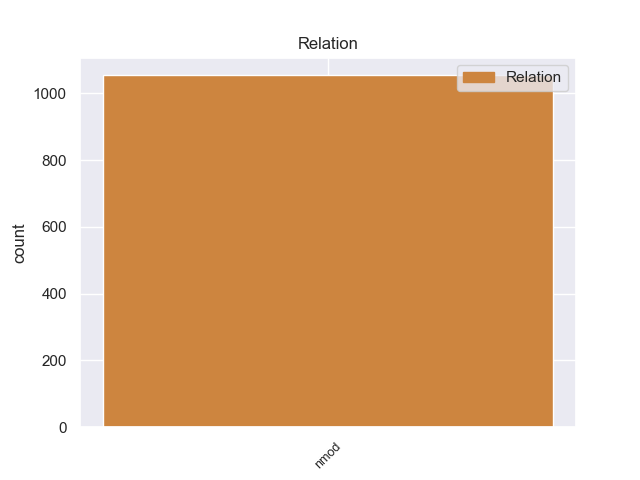
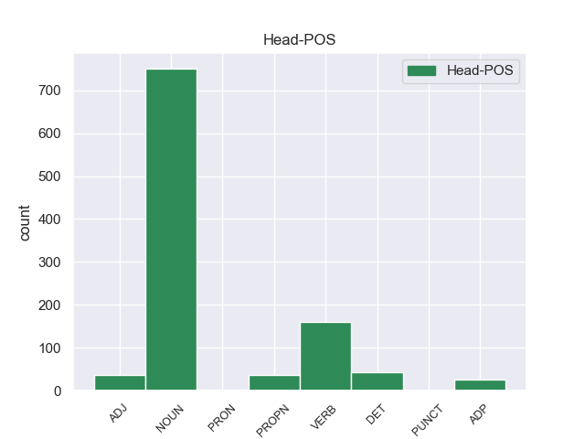
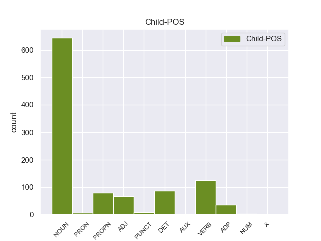

Distribution of features within this leaf



Agreement Rules sorted by frequency.
- When the dependent token is the nominal modifier(nmod) of the head token, and the head token is NOUN and the dependent token is NOUN.
1 El _ _ _ _ 0 _ _ _
2 ministro _ _ _ _ 0 _ _ _
3 británico _ _ _ _ 0 _ _ _
4 de _ _ _ _ 0 _ _ _
5 Defensa _ _ _ _ 0 _ _ _
6 , _ _ _ _ 0 _ _ _
7 Liam _ _ _ _ 0 _ _ _
8 Fox _ _ _ _ 0 _ _ _
9 , _ _ _ _ 0 _ _ _
10 consideró _ _ _ _ 0 _ _ _
11 que _ _ _ _ 0 _ _ _
12 el _ _ _ _ 0 _ _ _
13 avance avance NOUN _ Gender=Masc|Number=Sing 0 _ _ _
14 rebelde _ _ _ _ 0 _ _ _
15 puede _ _ _ _ 0 _ _ _
16 despejar _ _ _ _ 0 _ _ _
17 el _ _ _ _ 0 _ _ _
18 camino _ _ _ _ 0 _ _ _
19 para _ _ _ _ 0 _ _ _
20 que _ _ _ _ 0 _ _ _
21 los _ _ _ _ 0 _ _ _
22 insurgentes _ _ _ _ 0 _ _ _
23 se _ _ _ _ 0 _ _ _
24 hagan _ _ _ _ 0 _ _ _
25 con _ _ _ _ 0 _ _ _
26 el _ _ _ _ 0 _ _ _
27 control control NOUN _ Gender=Masc|Number=Sing 13 nmod _ _
28 de _ _ _ _ 0 _ _ _
29 los _ _ _ _ 0 _ _ _
30 puntos _ _ _ _ 0 _ _ _
31 de _ _ _ _ 0 _ _ _
32 exportación _ _ _ _ 0 _ _ _
33 de _ _ _ _ 0 _ _ _
34 petróleo _ _ _ _ 0 _ _ _
35 de _ _ _ _ 0 _ _ _
36 Libia _ _ _ _ 0 _ _ _
37 , _ _ _ _ 0 _ _ _
38 una _ _ _ _ 0 _ _ _
39 situación _ _ _ _ 0 _ _ _
40 que _ _ _ _ 0 _ _ _
41 puede _ _ _ _ 0 _ _ _
42 cambiar _ _ _ _ 0 _ _ _
43 la _ _ _ _ 0 _ _ _
44 " _ _ _ _ 0 _ _ _
45 dinámica _ _ _ _ 0 _ _ _
46 " _ _ _ _ 0 _ _ _
47 de _ _ _ _ 0 _ _ _
48 el _ _ _ _ 0 _ _ _
49 conflicto _ _ _ _ 0 _ _ _
50 . _ _ _ _ 0 _ _ _
1 Su _ _ _ _ 0 _ _ _
2 cronología _ _ _ _ 0 _ _ _
3 es _ _ _ _ 0 _ _ _
4 difícil _ _ _ _ 0 _ _ _
5 de _ _ _ _ 0 _ _ _
6 datar _ _ _ _ 0 _ _ _
7 pero _ _ _ _ 0 _ _ _
8 por _ _ _ _ 0 _ _ _
9 los _ _ _ _ 0 _ _ _
10 caracteres caracteres VERB _ Gender=Masc|Number=Sing 0 _ _ _
11 de _ _ _ _ 0 _ _ _
12 la _ _ _ _ 0 _ _ _
13 inscripción inscripcióo NOUN _ Gender=Masc|Number=Sing 10 nmod _ _
14 de _ _ _ _ 0 _ _ _
15 la _ _ _ _ 0 _ _ _
16 cruz _ _ _ _ 0 _ _ _
17 y _ _ _ _ 0 _ _ _
18 por _ _ _ _ 0 _ _ _
19 la _ _ _ _ 0 _ _ _
20 pintura _ _ _ _ 0 _ _ _
21 se _ _ _ _ 0 _ _ _
22 localiza _ _ _ _ 0 _ _ _
23 en _ _ _ _ 0 _ _ _
24 el _ _ _ _ 0 _ _ _
25 siglo _ _ _ _ 0 _ _ _
26 XI _ _ _ _ 0 _ _ _
27 y _ _ _ _ 0 _ _ _
28 otros _ _ _ _ 0 _ _ _
29 autores _ _ _ _ 0 _ _ _
30 la _ _ _ _ 0 _ _ _
31 datan _ _ _ _ 0 _ _ _
32 en _ _ _ _ 0 _ _ _
33 el _ _ _ _ 0 _ _ _
34 siglo _ _ _ _ 0 _ _ _
35 XII _ _ _ _ 0 _ _ _
36 , _ _ _ _ 0 _ _ _
37 la _ _ _ _ 0 _ _ _
38 pintura _ _ _ _ 0 _ _ _
39 es _ _ _ _ 0 _ _ _
40 parecida _ _ _ _ 0 _ _ _
41 a _ _ _ _ 0 _ _ _
42 los _ _ _ _ 0 _ _ _
43 frontales _ _ _ _ 0 _ _ _
44 de _ _ _ _ 0 _ _ _
45 la _ _ _ _ 0 _ _ _
46 zona _ _ _ _ 0 _ _ _
47 de _ _ _ _ 0 _ _ _
48 Ripoll _ _ _ _ 0 _ _ _
49 , _ _ _ _ 0 _ _ _
50 de _ _ _ _ 0 _ _ _
51 mediados _ _ _ _ 0 _ _ _
52 de _ _ _ _ 0 _ _ _
53 el _ _ _ _ 0 _ _ _
54 siglo _ _ _ _ 0 _ _ _
55 XII _ _ _ _ 0 _ _ _
56 , _ _ _ _ 0 _ _ _
57 que _ _ _ _ 0 _ _ _
58 se _ _ _ _ 0 _ _ _
59 utiliza _ _ _ _ 0 _ _ _
60 como _ _ _ _ 0 _ _ _
61 argumento _ _ _ _ 0 _ _ _
62 por _ _ _ _ 0 _ _ _
63 diversos _ _ _ _ 0 _ _ _
64 investigadores _ _ _ _ 0 _ _ _
65 . _ _ _ _ 0 _ _ _
1 A _ _ _ _ 0 _ _ _
2 continuación continuación VERB _ Definite=Def|Gender=Masc|Number=Sing|PronType=Art 6 nmod _ _
3 se _ _ _ _ 0 _ _ _
4 brinda _ _ _ _ 0 _ _ _
5 un _ _ _ _ 0 _ _ _
6 listado listado NOUN _ Gender=Masc|Number=Sing 0 _ _ _
7 de _ _ _ _ 0 _ _ _
8 las _ _ _ _ 0 _ _ _
9 especies _ _ _ _ 0 _ _ _
10 de _ _ _ _ 0 _ _ _
11 el _ _ _ _ 0 _ _ _
12 género _ _ _ _ 0 _ _ _
13 aceptadas _ _ _ _ 0 _ _ _
14 hasta _ _ _ _ 0 _ _ _
15 julio _ _ _ _ 0 _ _ _
16 de _ _ _ _ 0 _ _ _
17 2012 _ _ _ _ 0 _ _ _
18 , _ _ _ _ 0 _ _ _
19 ordenadas _ _ _ _ 0 _ _ _
20 alfabéticamente _ _ _ _ 0 _ _ _
21 . _ _ _ _ 0 _ _ _
1 Esta _ _ _ _ 0 _ _ _
2 compra _ _ _ _ 0 _ _ _
3 pone _ _ _ _ 0 _ _ _
4 fin _ _ _ _ 0 _ _ _
5 a _ _ _ _ 0 _ _ _
6 meses _ _ _ _ 0 _ _ _
7 de _ _ _ _ 0 _ _ _
8 negociaciones _ _ _ _ 0 _ _ _
9 y _ _ _ _ 0 _ _ _
10 refuerza _ _ _ _ 0 _ _ _
11 la _ _ _ _ 0 _ _ _
12 estrategia _ _ _ _ 0 _ _ _
13 de _ _ _ _ 0 _ _ _
14 crecimiento _ _ _ _ 0 _ _ _
15 implantada _ _ _ _ 0 _ _ _
16 por _ _ _ _ 0 _ _ _
17 la _ _ _ _ 0 _ _ _
18 dirección _ _ _ _ 0 _ _ _
19 de _ _ _ _ 0 _ _ _
20 el _ _ _ _ 0 _ _ _
21 grupo _ _ _ _ 0 _ _ _
22 además _ _ _ _ 0 _ _ _
23 de _ _ _ _ 0 _ _ _
24 añadir _ _ _ _ 0 _ _ _
25 un _ _ _ _ 0 _ _ _
26 complejo complejo NOUN _ Gender=Masc|Number=Sing 0 _ _ _
27 de _ _ _ _ 0 _ _ _
28 calidad _ _ _ _ 0 _ _ _
29 superior superior PROPN _ Gender=Masc|Number=Sing 26 nmod _ _
30 a _ _ _ _ 0 _ _ _
31 su _ _ _ _ 0 _ _ _
32 oferta _ _ _ _ 0 _ _ _
33 . _ _ _ _ 0 _ _ _
1 Alrededor _ _ _ _ 0 _ _ _
2 de _ _ _ _ 0 _ _ _
3 el _ _ _ _ 0 _ _ _
4 11.6 _ _ _ _ 0 _ _ _
5 % % DET _ Gender=Masc|Number=Sing 14 nmod _ _
6 de _ _ _ _ 0 _ _ _
7 la _ _ _ _ 0 _ _ _
8 población _ _ _ _ 0 _ _ _
9 estaban _ _ _ _ 0 _ _ _
10 por _ _ _ _ 0 _ _ _
11 debajo _ _ _ _ 0 _ _ _
12 de _ _ _ _ 0 _ _ _
13 el _ _ _ _ 0 _ _ _
14 umbral umbral NOUN _ Gender=Masc|Number=Sing 0 _ _ _
15 de _ _ _ _ 0 _ _ _
16 pobreza _ _ _ _ 0 _ _ _
17 . _ _ _ _ 0 _ _ _
1 La _ _ _ _ 0 _ _ _
2 dirigente _ _ _ _ 0 _ _ _
3 socialdemócrata _ _ _ _ 0 _ _ _
4 dijo _ _ _ _ 0 _ _ _
5 que _ _ _ _ 0 _ _ _
6 su _ _ _ _ 0 _ _ _
7 partido _ _ _ _ 0 _ _ _
8 está _ _ _ _ 0 _ _ _
9 promoviendo _ _ _ _ 0 _ _ _
10 una _ _ _ _ 0 _ _ _
11 Ley _ _ _ _ 0 _ _ _
12 que _ _ _ _ 0 _ _ _
13 obligue _ _ _ _ 0 _ _ _
14 a _ _ _ _ 0 _ _ _
15 todas _ _ _ _ 0 _ _ _
16 las _ _ _ _ 0 _ _ _
17 instituciones _ _ _ _ 0 _ _ _
18 de _ _ _ _ 0 _ _ _
19 el _ _ _ _ 0 _ _ _
20 Estado _ _ _ _ 0 _ _ _
21 a _ _ _ _ 0 _ _ _
22 efectuar _ _ _ _ 0 _ _ _
23 sus _ _ _ _ 0 _ _ _
24 compras _ _ _ _ 0 _ _ _
25 de _ _ _ _ 0 _ _ _
26 manera _ _ _ _ 0 _ _ _
27 pública _ _ _ _ 0 _ _ _
28 por _ _ _ _ 0 _ _ _
29 internet _ _ _ _ 0 _ _ _
30 , _ _ _ _ 0 _ _ _
31 ya _ _ _ _ 0 _ _ _
32 que _ _ _ _ 0 _ _ _
33 en _ _ _ _ 0 _ _ _
34 la _ _ _ _ 0 _ _ _
35 actualidad _ _ _ _ 0 _ _ _
36 ello _ _ _ _ 0 _ _ _
37 es _ _ _ _ 0 _ _ _
38 posible _ _ _ _ 0 _ _ _
39 técnicamente _ _ _ _ 0 _ _ _
40 , _ _ _ _ 0 _ _ _
41 para _ _ _ _ 0 _ _ _
42 que _ _ _ _ 0 _ _ _
43 los _ _ _ _ 0 _ _ _
44 procesos _ _ _ _ 0 _ _ _
45 de _ _ _ _ 0 _ _ _
46 adquisición _ _ _ _ 0 _ _ _
47 se _ _ _ _ 0 _ _ _
48 realicen _ _ _ _ 0 _ _ _
49 a _ _ _ _ 0 _ _ _
50 la _ _ _ _ 0 _ _ _
51 vista _ _ _ _ 0 _ _ _
52 de _ _ _ _ 0 _ _ _
53 el _ _ _ _ 0 _ _ _
54 ciudadano _ _ _ _ 0 _ _ _
55 , _ _ _ _ 0 _ _ _
56 garantizando _ _ _ _ 0 _ _ _
57 así _ _ _ _ 0 _ _ _
58 su _ _ _ _ 0 _ _ _
59 transparencia _ _ _ _ 0 _ _ _
60 , _ _ _ _ 0 _ _ _
61 lo _ _ _ _ 0 _ _ _
62 que _ _ _ _ 0 _ _ _
63 permitirá _ _ _ _ 0 _ _ _
64 una _ _ _ _ 0 _ _ _
65 efectiva _ _ _ _ 0 _ _ _
66 contraloría _ _ _ _ 0 _ _ _
67 social _ _ _ _ 0 _ _ _
68 que _ _ _ _ 0 _ _ _
69 avale _ _ _ _ 0 _ _ _
70 la _ _ _ _ 0 _ _ _
71 honestidad _ _ _ _ 0 _ _ _
72 de _ _ _ _ 0 _ _ _
73 los _ _ _ _ 0 _ _ _
74 procesos _ _ _ _ 0 _ _ _
75 de _ _ _ _ 0 _ _ _
76 compras _ _ _ _ 0 _ _ _
77 a _ _ _ _ 0 _ _ _
78 el _ _ _ _ 0 _ _ _
79 evitar _ _ _ _ 0 _ _ _
80 la _ _ _ _ 0 _ _ _
81 intermediación _ _ _ _ 0 _ _ _
82 , _ _ _ _ 0 _ _ _
83 es _ _ _ _ 0 _ _ _
84 decir _ _ _ _ 0 _ _ _
85 , _ _ _ _ 0 _ _ _
86 el _ _ _ _ 0 _ _ _
87 encuentro encuentro NOUN _ Gender=Masc|Number=Sing 0 _ _ _
88 cara _ _ _ _ 0 _ _ _
89 a _ _ _ _ 0 _ _ _
90 cara _ _ _ _ 0 _ _ _
91 entre _ _ _ _ 0 _ _ _
92 el _ _ _ _ 0 _ _ _
93 vendedor _ _ _ _ 0 _ _ _
94 y _ _ _ _ 0 _ _ _
95 el _ _ _ _ 0 _ _ _
96 comprador _ _ _ _ 0 _ _ _
97 , _ _ _ _ 0 _ _ _
98 que _ _ _ _ 0 _ _ _
99 es _ _ _ _ 0 _ _ _
100 un _ _ _ _ 0 _ _ _
101 mecanismo _ _ _ _ 0 _ _ _
102 que _ _ _ _ 0 _ _ _
103 facilita facilita ADJ _ Gender=Masc|Number=Sing 87 nmod _ _
104 la _ _ _ _ 0 _ _ _
105 corrupción _ _ _ _ 0 _ _ _
106 a _ _ _ _ 0 _ _ _
107 el _ _ _ _ 0 _ _ _
108 poner _ _ _ _ 0 _ _ _
109 en _ _ _ _ 0 _ _ _
110 manos _ _ _ _ 0 _ _ _
111 de _ _ _ _ 0 _ _ _
112 algunos _ _ _ _ 0 _ _ _
113 funcionarios _ _ _ _ 0 _ _ _
114 inescrupulosos _ _ _ _ 0 _ _ _
115 el _ _ _ _ 0 _ _ _
116 poder _ _ _ _ 0 _ _ _
117 discrecional _ _ _ _ 0 _ _ _
118 de _ _ _ _ 0 _ _ _
119 adquirir _ _ _ _ 0 _ _ _
120 lo _ _ _ _ 0 _ _ _
121 bienes _ _ _ _ 0 _ _ _
122 y _ _ _ _ 0 _ _ _
123 servicios _ _ _ _ 0 _ _ _
124 que _ _ _ _ 0 _ _ _
125 los _ _ _ _ 0 _ _ _
126 organismos _ _ _ _ 0 _ _ _
127 públicos _ _ _ _ 0 _ _ _
128 requieren _ _ _ _ 0 _ _ _
129 . _ _ _ _ 0 _ _ _
1 Sam _ _ _ _ 0 _ _ _
2 les _ _ _ _ 0 _ _ _
3 dice dice VERB _ Gender=Masc|Number=Sing 0 _ _ _
4 , _ _ _ _ 0 _ _ _
5 de _ _ _ _ 0 _ _ _
6 broma broma VERB _ Gender=Masc|Number=Sing 3 nmod _ _
7 , _ _ _ _ 0 _ _ _
8 que _ _ _ _ 0 _ _ _
9 Carly _ _ _ _ 0 _ _ _
10 y _ _ _ _ 0 _ _ _
11 Freddie _ _ _ _ 0 _ _ _
12 se _ _ _ _ 0 _ _ _
13 aman _ _ _ _ 0 _ _ _
14 , _ _ _ _ 0 _ _ _
15 provocando _ _ _ _ 0 _ _ _
16 que _ _ _ _ 0 _ _ _
17 los _ _ _ _ 0 _ _ _
18 fans _ _ _ _ 0 _ _ _
19 de _ _ _ _ 0 _ _ _
20 iCarly _ _ _ _ 0 _ _ _
21 inicien _ _ _ _ 0 _ _ _
22 una _ _ _ _ 0 _ _ _
23 descontrolada _ _ _ _ 0 _ _ _
24 guerra _ _ _ _ 0 _ _ _
25 de _ _ _ _ 0 _ _ _
26 fans _ _ _ _ 0 _ _ _
27 donde _ _ _ _ 0 _ _ _
28 discuten _ _ _ _ 0 _ _ _
29 qué _ _ _ _ 0 _ _ _
30 relación _ _ _ _ 0 _ _ _
31 amorosa _ _ _ _ 0 _ _ _
32 existe _ _ _ _ 0 _ _ _
33 entre _ _ _ _ 0 _ _ _
34 los _ _ _ _ 0 _ _ _
35 chicos _ _ _ _ 0 _ _ _
36 : _ _ _ _ 0 _ _ _
37 si _ _ _ _ 0 _ _ _
38 Carly _ _ _ _ 0 _ _ _
39 y _ _ _ _ 0 _ _ _
40 Freddie _ _ _ _ 0 _ _ _
41 ( _ _ _ _ 0 _ _ _
42 Creddie _ _ _ _ 0 _ _ _
43 ) _ _ _ _ 0 _ _ _
44 o _ _ _ _ 0 _ _ _
45 Sam _ _ _ _ 0 _ _ _
46 y _ _ _ _ 0 _ _ _
47 Freddie _ _ _ _ 0 _ _ _
48 ( _ _ _ _ 0 _ _ _
49 Seddie _ _ _ _ 0 _ _ _
50 ) _ _ _ _ 0 _ _ _
51 tienen _ _ _ _ 0 _ _ _
52 una _ _ _ _ 0 _ _ _
53 relación _ _ _ _ 0 _ _ _
54 romántica _ _ _ _ 0 _ _ _
55 entre _ _ _ _ 0 _ _ _
56 sí _ _ _ _ 0 _ _ _
57 , _ _ _ _ 0 _ _ _
58 lo _ _ _ _ 0 _ _ _
59 cual _ _ _ _ 0 _ _ _
60 los _ _ _ _ 0 _ _ _
61 sorprende _ _ _ _ 0 _ _ _
62 mucho _ _ _ _ 0 _ _ _
63 y _ _ _ _ 0 _ _ _
64 afecta _ _ _ _ 0 _ _ _
65 las _ _ _ _ 0 _ _ _
66 oportunidades _ _ _ _ 0 _ _ _
67 de _ _ _ _ 0 _ _ _
68 Carly _ _ _ _ 0 _ _ _
69 de _ _ _ _ 0 _ _ _
70 salir _ _ _ _ 0 _ _ _
71 con _ _ _ _ 0 _ _ _
72 Adam _ _ _ _ 0 _ _ _
73 . _ _ _ _ 0 _ _ _
1 En _ _ _ _ 0 _ _ _
2 el _ _ _ _ 0 _ _ _
3 transcurso _ _ _ _ 0 _ _ _
4 de _ _ _ _ 0 _ _ _
5 la _ _ _ _ 0 _ _ _
6 década _ _ _ _ 0 _ _ _
7 de _ _ _ _ 0 _ _ _
8 1980 _ _ _ _ 0 _ _ _
9 y _ _ _ _ 0 _ _ _
10 de _ _ _ _ 0 _ _ _
11 1990 _ _ _ _ 0 _ _ _
12 la _ _ _ _ 0 _ _ _
13 percepción _ _ _ _ 0 _ _ _
14 social _ _ _ _ 0 _ _ _
15 de _ _ _ _ 0 _ _ _
16 la _ _ _ _ 0 _ _ _
17 enfermedad _ _ _ _ 0 _ _ _
18 cambió _ _ _ _ 0 _ _ _
19 gracias _ _ _ _ 0 _ _ _
20 , _ _ _ _ 0 _ _ _
21 en _ _ _ _ 0 _ _ _
22 parte _ _ _ _ 0 _ _ _
23 , _ _ _ _ 0 _ _ _
24 a _ _ _ _ 0 _ _ _
25 White _ _ _ _ 0 _ _ _
26 y _ _ _ _ 0 _ _ _
27 otras _ _ _ _ 0 _ _ _
28 personalidades _ _ _ _ 0 _ _ _
29 relevantes _ _ _ _ 0 _ _ _
30 con _ _ _ _ 0 _ _ _
31 sida _ _ _ _ 0 _ _ _
32 , _ _ _ _ 0 _ _ _
33 como _ _ _ _ 0 _ _ _
34 el _ _ _ _ 0 _ _ _
35 jugador _ _ _ _ 0 _ _ _
36 de _ _ _ _ 0 _ _ _
37 baloncesto _ _ _ _ 0 _ _ _
38 Magic _ _ _ _ 0 _ _ _
39 Johnson _ _ _ _ 0 _ _ _
40 , _ _ _ _ 0 _ _ _
41 los _ _ _ _ 0 _ _ _
42 hermanos _ _ _ _ 0 _ _ _
43 Ray _ _ _ _ 0 _ _ _
44 o _ _ _ _ 0 _ _ _
45 Kimberly _ _ _ _ 0 _ _ _
46 Bergalis _ _ _ _ 0 _ _ _
47 , _ _ _ _ 0 _ _ _
48 quienes _ _ _ _ 0 _ _ _
49 aparecieron _ _ _ _ 0 _ _ _
50 con _ _ _ _ 0 _ _ _
51 frecuencia _ _ _ _ 0 _ _ _
52 en _ _ _ _ 0 _ _ _
53 los _ _ _ _ 0 _ _ _
54 medios _ _ _ _ 0 _ _ _
55 de _ _ _ _ 0 _ _ _
56 comunicación comunicación NOUN _ Gender=Masc|Number=Sing 60 nmod _ _
57 reclamando _ _ _ _ 0 _ _ _
58 una _ _ _ _ 0 _ _ _
59 mayor _ _ _ _ 0 _ _ _
60 investigación investigación PROPN _ Gender=Masc|Number=Sing 0 _ _ _
61 sobre _ _ _ _ 0 _ _ _
62 el _ _ _ _ 0 _ _ _
63 sida _ _ _ _ 0 _ _ _
64 y _ _ _ _ 0 _ _ _
65 más _ _ _ _ 0 _ _ _
66 sensibilización _ _ _ _ 0 _ _ _
67 ciudadana _ _ _ _ 0 _ _ _
68 . _ _ _ _ 0 _ _ _
1 De _ _ _ _ 0 _ _ _
2 los _ _ _ _ 0 _ _ _
3 546 _ _ _ _ 0 _ _ _
4 habitantes _ _ _ _ 0 _ _ _
5 , _ _ _ _ 0 _ _ _
6 Chester _ _ _ _ 0 _ _ _
7 estaba _ _ _ _ 0 _ _ _
8 compuesto _ _ _ _ 0 _ _ _
9 por _ _ _ _ 0 _ _ _
10 el _ _ _ _ 0 _ _ _
11 98.72 _ _ _ _ 0 _ _ _
12 % _ _ _ _ 0 _ _ _
13 blancos _ _ _ _ 0 _ _ _
14 , _ _ _ _ 0 _ _ _
15 el _ _ _ _ 0 _ _ _
16 0 _ _ _ _ 0 _ _ _
17 % _ _ _ _ 0 _ _ _
18 eran _ _ _ _ 0 _ _ _
19 afroamericanos _ _ _ _ 0 _ _ _
20 , _ _ _ _ 0 _ _ _
21 el _ _ _ _ 0 _ _ _
22 0.37 _ _ _ _ 0 _ _ _
23 % _ _ _ _ 0 _ _ _
24 eran _ _ _ _ 0 _ _ _
25 amerindios _ _ _ _ 0 _ _ _
26 , _ _ _ _ 0 _ _ _
27 el _ _ _ _ 0 _ _ _
28 0.18 _ _ _ _ 0 _ _ _
29 % _ _ _ _ 0 _ _ _
30 eran _ _ _ _ 0 _ _ _
31 asiáticos _ _ _ _ 0 _ _ _
32 , _ _ _ _ 0 _ _ _
33 el _ _ _ _ 0 _ _ _
34 0 _ _ _ _ 0 _ _ _
35 % _ _ _ _ 0 _ _ _
36 eran _ _ _ _ 0 _ _ _
37 isleños isleños NOUN _ Definite=Def|Gender=Masc|Number=Sing|PronType=Art 44 nmod _ _
38 de _ _ _ _ 0 _ _ _
39 el _ _ _ _ 0 _ _ _
40 Pacífico _ _ _ _ 0 _ _ _
41 , _ _ _ _ 0 _ _ _
42 el _ _ _ _ 0 _ _ _
43 0 _ _ _ _ 0 _ _ _
44 % % DET _ Gender=Masc|Number=Sing 0 _ _ _
45 eran _ _ _ _ 0 _ _ _
46 de _ _ _ _ 0 _ _ _
47 otras _ _ _ _ 0 _ _ _
48 razas _ _ _ _ 0 _ _ _
49 y _ _ _ _ 0 _ _ _
50 el _ _ _ _ 0 _ _ _
51 0.73 _ _ _ _ 0 _ _ _
52 % _ _ _ _ 0 _ _ _
53 pertenecían _ _ _ _ 0 _ _ _
54 a _ _ _ _ 0 _ _ _
55 dos _ _ _ _ 0 _ _ _
56 o _ _ _ _ 0 _ _ _
57 más _ _ _ _ 0 _ _ _
58 razas _ _ _ _ 0 _ _ _
59 . _ _ _ _ 0 _ _ _
1 Más _ _ _ _ 0 _ _ _
2 a _ _ _ _ 0 _ _ _
3 el _ _ _ _ 0 _ _ _
4 norte norte ADP _ Gender=Masc|Number=Sing 9 nmod _ _
5 , _ _ _ _ 0 _ _ _
6 Cherbourg _ _ _ _ 0 _ _ _
7 es _ _ _ _ 0 _ _ _
8 un _ _ _ _ 0 _ _ _
9 destino destino NOUN _ Gender=Masc|Number=Sing 0 _ _ _
10 de _ _ _ _ 0 _ _ _
11 vacaciones _ _ _ _ 0 _ _ _
12 ideal _ _ _ _ 0 _ _ _
13 para _ _ _ _ 0 _ _ _
14 divertir _ _ _ _ 0 _ _ _
15 se _ _ _ _ 0 _ _ _
16 en _ _ _ _ 0 _ _ _
17 familia _ _ _ _ 0 _ _ _
18 . _ _ _ _ 0 _ _ _
1 Lenchantin _ _ _ _ 0 _ _ _
2 abandonó _ _ _ _ 0 _ _ _
3 para _ _ _ _ 0 _ _ _
4 unir _ _ _ _ 0 _ _ _
5 se _ _ _ _ 0 _ _ _
6 a _ _ _ _ 0 _ _ _
7 la _ _ _ _ 0 _ _ _
8 nueva _ _ _ _ 0 _ _ _
9 banda _ _ _ _ 0 _ _ _
10 de _ _ _ _ 0 _ _ _
11 Billy _ _ _ _ 0 _ _ _
12 Corgan _ _ _ _ 0 _ _ _
13 Zwan _ _ _ _ 0 _ _ _
14 en _ _ _ _ 0 _ _ _
15 abril _ _ _ _ 0 _ _ _
16 de _ _ _ _ 0 _ _ _
17 2002 _ _ _ _ 0 _ _ _
18 , _ _ _ _ 0 _ _ _
19 mientras _ _ _ _ 0 _ _ _
20 que _ _ _ _ 0 _ _ _
21 Van _ _ _ _ 0 _ _ _
22 Leeuwen _ _ _ _ 0 _ _ _
23 se _ _ _ _ 0 _ _ _
24 marchó _ _ _ _ 0 _ _ _
25 para _ _ _ _ 0 _ _ _
26 tocar _ _ _ _ 0 _ _ _
27 como _ _ _ _ 0 _ _ _
28 guitarrista _ _ _ _ 0 _ _ _
29 en _ _ _ _ 0 _ _ _
30 la _ _ _ _ 0 _ _ _
31 gira gira ADJ _ Gender=Masc|Number=Sing 0 _ _ _
32 de _ _ _ _ 0 _ _ _
33 Queens _ _ _ _ 0 _ _ _
34 of _ _ _ _ 0 _ _ _
35 the _ _ _ _ 0 _ _ _
36 Stone stone NOUN _ Gender=Masc|Number=Sing 31 nmod _ _
37 Age _ _ _ _ 0 _ _ _
38 . _ _ _ _ 0 _ _ _
1 Del _ _ _ _ 0 _ _ _
2 total _ _ _ _ 0 _ _ _
3 de _ _ _ _ 0 _ _ _
4 la _ _ _ _ 0 _ _ _
5 población _ _ _ _ 0 _ _ _
6 el _ _ _ _ 0 _ _ _
7 0 _ _ _ _ 0 _ _ _
8 % % DET _ Gender=Masc|Number=Sing 12 nmod _ _
9 eran _ _ _ _ 0 _ _ _
10 hispanos _ _ _ _ 0 _ _ _
11 o _ _ _ _ 0 _ _ _
12 latinos latinos VERB _ Gender=Masc|Number=Sing 0 _ _ _
13 de _ _ _ _ 0 _ _ _
14 cualquier _ _ _ _ 0 _ _ _
15 raza _ _ _ _ 0 _ _ _
16 . _ _ _ _ 0 _ _ _
1 Las _ _ _ _ 0 _ _ _
2 semillas _ _ _ _ 0 _ _ _
3 de _ _ _ _ 0 _ _ _
4 el _ _ _ _ 0 _ _ _
5 pino _ _ _ _ 0 _ _ _
6 chino chino ADJ _ Gender=Masc|Number=Sing 19 nmod _ _
7 de _ _ _ _ 0 _ _ _
8 Armand _ _ _ _ 0 _ _ _
9 son _ _ _ _ 0 _ _ _
10 cosechadas _ _ _ _ 0 _ _ _
11 y _ _ _ _ 0 _ _ _
12 vendidas _ _ _ _ 0 _ _ _
13 como _ _ _ _ 0 _ _ _
14 piñones _ _ _ _ 0 _ _ _
15 y _ _ _ _ 0 _ _ _
16 la _ _ _ _ 0 _ _ _
17 madera _ _ _ _ 0 _ _ _
18 se _ _ _ _ 0 _ _ _
19 usa usa VERB _ Gender=Masc|Number=Sing 0 _ _ _
20 para _ _ _ _ 0 _ _ _
21 propósitos _ _ _ _ 0 _ _ _
22 generales _ _ _ _ 0 _ _ _
23 en _ _ _ _ 0 _ _ _
24 la _ _ _ _ 0 _ _ _
25 construcción _ _ _ _ 0 _ _ _
26 ; _ _ _ _ 0 _ _ _
1 De _ _ _ _ 0 _ _ _
2 los _ _ _ _ 0 _ _ _
3 714 _ _ _ _ 0 _ _ _
4 habitantes _ _ _ _ 0 _ _ _
5 , _ _ _ _ 0 _ _ _
6 el _ _ _ _ 0 _ _ _
7 municipio _ _ _ _ 0 _ _ _
8 de _ _ _ _ 0 _ _ _
9 Daggett _ _ _ _ 0 _ _ _
10 estaba _ _ _ _ 0 _ _ _
11 compuesto _ _ _ _ 0 _ _ _
12 por _ _ _ _ 0 _ _ _
13 el _ _ _ _ 0 _ _ _
14 93.28 _ _ _ _ 0 _ _ _
15 % _ _ _ _ 0 _ _ _
16 blancos _ _ _ _ 0 _ _ _
17 , _ _ _ _ 0 _ _ _
18 el _ _ _ _ 0 _ _ _
19 2.38 _ _ _ _ 0 _ _ _
20 % _ _ _ _ 0 _ _ _
21 eran _ _ _ _ 0 _ _ _
22 afroamericanos _ _ _ _ 0 _ _ _
23 , _ _ _ _ 0 _ _ _
24 el _ _ _ _ 0 _ _ _
25 0.84 _ _ _ _ 0 _ _ _
26 % _ _ _ _ 0 _ _ _
27 eran _ _ _ _ 0 _ _ _
28 amerindios amerindios ADP _ Definite=Def|Gender=Masc|Number=Sing|PronType=Art 0 _ _ _
29 , _ _ _ _ 0 _ _ _
30 el _ _ _ _ 0 _ _ _
31 0.56 _ _ _ _ 0 _ _ _
32 % _ _ _ _ 0 _ _ _
33 eran _ _ _ _ 0 _ _ _
34 asiáticos _ _ _ _ 0 _ _ _
35 , _ _ _ _ 0 _ _ _
36 el _ _ _ _ 0 _ _ _
37 0 _ _ _ _ 0 _ _ _
38 % _ _ _ _ 0 _ _ _
39 eran _ _ _ _ 0 _ _ _
40 isleños _ _ _ _ 0 _ _ _
41 de _ _ _ _ 0 _ _ _
42 el _ _ _ _ 0 _ _ _
43 Pacífico _ _ _ _ 0 _ _ _
44 , _ _ _ _ 0 _ _ _
45 el _ _ _ _ 0 _ _ _
46 0.84 _ _ _ _ 0 _ _ _
47 % _ _ _ _ 0 _ _ _
48 eran _ _ _ _ 0 _ _ _
49 de _ _ _ _ 0 _ _ _
50 otras _ _ _ _ 0 _ _ _
51 razas _ _ _ _ 0 _ _ _
52 y _ _ _ _ 0 _ _ _
53 el _ _ _ _ 0 _ _ _
54 2.1 _ _ _ _ 0 _ _ _
55 % % DET _ Gender=Masc|Number=Sing 28 nmod _ _
56 pertenecían _ _ _ _ 0 _ _ _
57 a _ _ _ _ 0 _ _ _
58 dos _ _ _ _ 0 _ _ _
59 o _ _ _ _ 0 _ _ _
60 más _ _ _ _ 0 _ _ _
61 razas _ _ _ _ 0 _ _ _
62 . _ _ _ _ 0 _ _ _
1 A _ _ _ _ 0 _ _ _
2 Pescio _ _ _ _ 0 _ _ _
3 se _ _ _ _ 0 _ _ _
4 le _ _ _ _ 0 _ _ _
5 debe _ _ _ _ 0 _ _ _
6 el _ _ _ _ 0 _ _ _
7 edificio _ _ _ _ 0 _ _ _
8 que _ _ _ _ 0 _ _ _
9 hoy _ _ _ _ 0 _ _ _
10 ocupa _ _ _ _ 0 _ _ _
11 la _ _ _ _ 0 _ _ _
12 Escuela _ _ _ _ 0 _ _ _
13 , _ _ _ _ 0 _ _ _
14 el _ _ _ _ 0 _ _ _
15 envío _ _ _ _ 0 _ _ _
16 de _ _ _ _ 0 _ _ _
17 profesores _ _ _ _ 0 _ _ _
18 a _ _ _ _ 0 _ _ _
19 el _ _ _ _ 0 _ _ _
20 extranjero _ _ _ _ 0 _ _ _
21 , _ _ _ _ 0 _ _ _
22 la _ _ _ _ 0 _ _ _
23 instalación instalación VERB _ Gender=Masc|Number=Sing 0 _ _ _
24 de _ _ _ _ 0 _ _ _
25 una _ _ _ _ 0 _ _ _
26 imprenta _ _ _ _ 0 _ _ _
27 y _ _ _ _ 0 _ _ _
28 un _ _ _ _ 0 _ _ _
29 sello _ _ _ _ 0 _ _ _
30 editorial _ _ _ _ 0 _ _ _
31 ( _ _ _ _ 0 _ _ _
32 primero _ _ _ _ 0 _ _ _
33 denominada _ _ _ _ 0 _ _ _
34 Prensas _ _ _ _ 0 _ _ _
35 de _ _ _ _ 0 _ _ _
36 Escuela _ _ _ _ 0 _ _ _
37 de _ _ _ _ 0 _ _ _
38 Derecho _ _ _ _ 0 _ _ _
39 y _ _ _ _ 0 _ _ _
40 luego _ _ _ _ 0 _ _ _
41 EDEVAL _ _ _ _ 0 _ _ _
42 ) _ _ _ _ 0 _ _ _
43 y _ _ _ _ 0 _ _ _
44 una _ _ _ _ 0 _ _ _
45 radio _ _ _ _ 0 _ _ _
46 ( _ _ _ _ 0 _ _ _
47 Valentín _ _ _ _ 0 _ _ _
48 Letelier _ _ _ _ 0 _ _ _
49 ) _ _ _ _ 0 _ _ _
50 , _ _ _ _ 0 _ _ _
51 la _ _ _ _ 0 _ _ _
52 robusta _ _ _ _ 0 _ _ _
53 dotación _ _ _ _ 0 _ _ _
54 de _ _ _ _ 0 _ _ _
55 la _ _ _ _ 0 _ _ _
56 biblioteca _ _ _ _ 0 _ _ _
57 y _ _ _ _ 0 _ _ _
58 el _ _ _ _ 0 _ _ _
59 impulso _ _ _ _ 0 _ _ _
60 de _ _ _ _ 0 _ _ _
61 la _ _ _ _ 0 _ _ _
62 investigación investigación PROPN _ Gender=Masc|Number=Sing 23 nmod _ _
63 y _ _ _ _ 0 _ _ _
64 las _ _ _ _ 0 _ _ _
65 publicaciones _ _ _ _ 0 _ _ _
66 . _ _ _ _ 0 _ _ _
1 Tebacas _ _ _ _ 0 _ _ _
2 fue _ _ _ _ 0 _ _ _
3 un _ _ _ _ 0 _ _ _
4 pueblo _ _ _ _ 0 _ _ _
5 indígena _ _ _ _ 0 _ _ _
6 que _ _ _ _ 0 _ _ _
7 habitó _ _ _ _ 0 _ _ _
8 en _ _ _ _ 0 _ _ _
9 los _ _ _ _ 0 _ _ _
10 municipios _ _ _ _ 0 _ _ _
11 de _ _ _ _ 0 _ _ _
12 Culiacán _ _ _ _ 0 _ _ _
13 y _ _ _ _ 0 _ _ _
14 Badiraguato _ _ _ _ 0 _ _ _
15 hasta _ _ _ _ 0 _ _ _
16 colindar _ _ _ _ 0 _ _ _
17 con _ _ _ _ 0 _ _ _
18 el _ _ _ _ 0 _ _ _
19 grupo grupo NOUN _ Gender=Masc|Number=Sing 0 _ _ _
20 cahita _ _ _ _ 0 _ _ _
21 de _ _ _ _ 0 _ _ _
22 los _ _ _ _ 0 _ _ _
23 sinaloas sinaloas PUNCT _ Gender=Masc|Number=Sing 19 nmod _ _
24 . _ _ _ _ 0 _ _ _
1 La _ _ _ _ 0 _ _ _
2 población _ _ _ _ 0 _ _ _
3 de _ _ _ _ 0 _ _ _
4 Monreal _ _ _ _ 0 _ _ _
5 de _ _ _ _ 0 _ _ _
6 Ariza _ _ _ _ 0 _ _ _
7 se _ _ _ _ 0 _ _ _
8 encuentra _ _ _ _ 0 _ _ _
9 situada _ _ _ _ 0 _ _ _
10 a _ _ _ _ 0 _ _ _
11 el _ _ _ _ 0 _ _ _
12 suroeste _ _ _ _ 0 _ _ _
13 de _ _ _ _ 0 _ _ _
14 la _ _ _ _ 0 _ _ _
15 provincia _ _ _ _ 0 _ _ _
16 de _ _ _ _ 0 _ _ _
17 Zaragoza _ _ _ _ 0 _ _ _
18 ( _ _ _ _ 0 _ _ _
19 a _ _ _ _ 0 _ _ _
20 138 _ _ _ _ 0 _ _ _
21 Km _ _ _ _ 0 _ _ _
22 de _ _ _ _ 0 _ _ _
23 la _ _ _ _ 0 _ _ _
24 capital _ _ _ _ 0 _ _ _
25 ) _ _ _ _ 0 _ _ _
26 y _ _ _ _ 0 _ _ _
27 a _ _ _ _ 0 _ _ _
28 orillas orillas VERB _ Gender=Masc|Number=Sing 0 _ _ _
29 de _ _ _ _ 0 _ _ _
30 el _ _ _ _ 0 _ _ _
31 río río ADP _ Gender=Masc|Number=Sing 28 nmod _ _
32 Jalón _ _ _ _ 0 _ _ _
33 , _ _ _ _ 0 _ _ _
34 pertenece _ _ _ _ 0 _ _ _
35 a _ _ _ _ 0 _ _ _
36 la _ _ _ _ 0 _ _ _
37 Comunidad _ _ _ _ 0 _ _ _
38 de _ _ _ _ 0 _ _ _
39 Calatayud _ _ _ _ 0 _ _ _
40 . _ _ _ _ 0 _ _ _
1 De _ _ _ _ 0 _ _ _
2 los _ _ _ _ 0 _ _ _
3 972 _ _ _ _ 0 _ _ _
4 habitantes _ _ _ _ 0 _ _ _
5 , _ _ _ _ 0 _ _ _
6 el _ _ _ _ 0 _ _ _
7 municipio _ _ _ _ 0 _ _ _
8 de _ _ _ _ 0 _ _ _
9 Millwood _ _ _ _ 0 _ _ _
10 estaba _ _ _ _ 0 _ _ _
11 compuesto _ _ _ _ 0 _ _ _
12 por _ _ _ _ 0 _ _ _
13 el _ _ _ _ 0 _ _ _
14 98.87 98.87 PROPN _ Gender=Masc|Number=Sing 0 _ _ _
15 % _ _ _ _ 0 _ _ _
16 blancos _ _ _ _ 0 _ _ _
17 , _ _ _ _ 0 _ _ _
18 el _ _ _ _ 0 _ _ _
19 0.31 _ _ _ _ 0 _ _ _
20 % _ _ _ _ 0 _ _ _
21 eran _ _ _ _ 0 _ _ _
22 afroamericanos _ _ _ _ 0 _ _ _
23 , _ _ _ _ 0 _ _ _
24 el _ _ _ _ 0 _ _ _
25 0 _ _ _ _ 0 _ _ _
26 % _ _ _ _ 0 _ _ _
27 eran _ _ _ _ 0 _ _ _
28 amerindios _ _ _ _ 0 _ _ _
29 , _ _ _ _ 0 _ _ _
30 el _ _ _ _ 0 _ _ _
31 0 _ _ _ _ 0 _ _ _
32 % _ _ _ _ 0 _ _ _
33 eran _ _ _ _ 0 _ _ _
34 asiáticos _ _ _ _ 0 _ _ _
35 , _ _ _ _ 0 _ _ _
36 el _ _ _ _ 0 _ _ _
37 0 _ _ _ _ 0 _ _ _
38 % _ _ _ _ 0 _ _ _
39 eran _ _ _ _ 0 _ _ _
40 isleños _ _ _ _ 0 _ _ _
41 de _ _ _ _ 0 _ _ _
42 el _ _ _ _ 0 _ _ _
43 Pacífico _ _ _ _ 0 _ _ _
44 , _ _ _ _ 0 _ _ _
45 el _ _ _ _ 0 _ _ _
46 0.31 _ _ _ _ 0 _ _ _
47 % _ _ _ _ 0 _ _ _
48 eran _ _ _ _ 0 _ _ _
49 de _ _ _ _ 0 _ _ _
50 otras _ _ _ _ 0 _ _ _
51 razas _ _ _ _ 0 _ _ _
52 y _ _ _ _ 0 _ _ _
53 el _ _ _ _ 0 _ _ _
54 0.51 _ _ _ _ 0 _ _ _
55 % % DET _ Gender=Masc|Number=Sing 14 nmod _ _
56 pertenecían _ _ _ _ 0 _ _ _
57 a _ _ _ _ 0 _ _ _
58 dos _ _ _ _ 0 _ _ _
59 o _ _ _ _ 0 _ _ _
60 más _ _ _ _ 0 _ _ _
61 razas _ _ _ _ 0 _ _ _
62 . _ _ _ _ 0 _ _ _
1 El _ _ _ _ 0 _ _ _
2 cielo cielo NOUN _ Gender=Masc|Number=Sing 0 _ _ _
3 y _ _ _ _ 0 _ _ _
4 la _ _ _ _ 0 _ _ _
5 tierra _ _ _ _ 0 _ _ _
6 ( _ _ _ _ 0 _ _ _
7 Heaven _ _ _ _ 0 _ _ _
8 & _ _ _ _ 0 _ _ _
9 Earth _ _ _ _ 0 _ _ _
10 en _ _ _ _ 0 _ _ _
11 inglés _ _ _ _ 0 _ _ _
12 ) _ _ _ _ 0 _ _ _
13 es _ _ _ _ 0 _ _ _
14 una _ _ _ _ 0 _ _ _
15 película _ _ _ _ 0 _ _ _
16 bélica _ _ _ _ 0 _ _ _
17 de _ _ _ _ 0 _ _ _
18 1993 _ _ _ _ 0 _ _ _
19 con _ _ _ _ 0 _ _ _
20 producción _ _ _ _ 0 _ _ _
21 estadounidense _ _ _ _ 0 _ _ _
22 y _ _ _ _ 0 _ _ _
23 francesa _ _ _ _ 0 _ _ _
24 dirigida _ _ _ _ 0 _ _ _
25 y _ _ _ _ 0 _ _ _
26 escrita _ _ _ _ 0 _ _ _
27 por _ _ _ _ 0 _ _ _
28 Oliver _ _ _ _ 0 _ _ _
29 Stone _ _ _ _ 0 _ _ _
30 , _ _ _ _ 0 _ _ _
31 y _ _ _ _ 0 _ _ _
32 protagonizada _ _ _ _ 0 _ _ _
33 por _ _ _ _ 0 _ _ _
34 Tommy _ _ _ _ 0 _ _ _
35 Lee _ _ _ _ 0 _ _ _
36 Jones _ _ _ _ 0 _ _ _
37 , _ _ _ _ 0 _ _ _
38 Haing _ _ _ _ 0 _ _ _
39 S. _ _ _ _ 0 _ _ _
40 Ngor _ _ _ _ 0 _ _ _
41 , _ _ _ _ 0 _ _ _
42 Joan _ _ _ _ 0 _ _ _
43 Chen _ _ _ _ 0 _ _ _
44 y _ _ _ _ 0 _ _ _
45 Hiep _ _ _ _ 0 _ _ _
46 Thi _ _ _ _ 0 _ _ _
47 Le le PRON _ Gender=Masc|Number=Sing 2 nmod _ _
48 . _ _ _ _ 0 _ _ _
1 Los _ _ _ _ 0 _ _ _
2 compiladores _ _ _ _ 0 _ _ _
3 JIT _ _ _ _ 0 _ _ _
4 son _ _ _ _ 0 _ _ _
5 un _ _ _ _ 0 _ _ _
6 ejemplo ejemplo DET _ Gender=Masc|Number=Sing 0 _ _ _
7 de _ _ _ _ 0 _ _ _
8 generadores _ _ _ _ 0 _ _ _
9 de _ _ _ _ 0 _ _ _
10 código código VERB _ Gender=Masc|Number=Sing 6 nmod _ _
11 . _ _ _ _ 0 _ _ _
1 La _ _ _ _ 0 _ _ _
2 presidenta _ _ _ _ 0 _ _ _
3 de _ _ _ _ 0 _ _ _
4 el _ _ _ _ 0 _ _ _
5 PP _ _ _ _ 0 _ _ _
6 catalán _ _ _ _ 0 _ _ _
7 ha _ _ _ _ 0 _ _ _
8 defendido _ _ _ _ 0 _ _ _
9 la _ _ _ _ 0 _ _ _
10 inocencia _ _ _ _ 0 _ _ _
11 de _ _ _ _ 0 _ _ _
12 el _ _ _ _ 0 _ _ _
13 videojuego _ _ _ _ 0 _ _ _
14 y _ _ _ _ 0 _ _ _
15 ha _ _ _ _ 0 _ _ _
16 descartado _ _ _ _ 0 _ _ _
17 que _ _ _ _ 0 _ _ _
18 tenga _ _ _ _ 0 _ _ _
19 un _ _ _ _ 0 _ _ _
20 contenido _ _ _ _ 0 _ _ _
21 violento _ _ _ _ 0 _ _ _
22 , _ _ _ _ 0 _ _ _
23 ya _ _ _ _ 0 _ _ _
24 que _ _ _ _ 0 _ _ _
25 , _ _ _ _ 0 _ _ _
26 según _ _ _ _ 0 _ _ _
27 ella _ _ _ _ 0 _ _ _
28 , _ _ _ _ 0 _ _ _
29 su _ _ _ _ 0 _ _ _
30 avatar _ _ _ _ 0 _ _ _
31 , _ _ _ _ 0 _ _ _
32 ' _ _ _ _ 0 _ _ _
33 Alicia _ _ _ _ 0 _ _ _
34 Croft _ _ _ _ 0 _ _ _
35 ' _ _ _ _ 0 _ _ _
36 , _ _ _ _ 0 _ _ _
37 viaja _ _ _ _ 0 _ _ _
38 a _ _ _ _ 0 _ _ _
39 lomos _ _ _ _ 0 _ _ _
40 de _ _ _ _ 0 _ _ _
41 la _ _ _ _ 0 _ _ _
42 gaviota gaviota ADJ _ Gender=Masc|Number=Sing 0 _ _ _
43 ' _ _ _ _ 0 _ _ _
44 Pepe _ _ _ _ 0 _ _ _
45 ' _ _ _ _ 0 _ _ _
46 lanzando _ _ _ _ 0 _ _ _
47 ideas _ _ _ _ 0 _ _ _
48 en _ _ _ _ 0 _ _ _
49 forma _ _ _ _ 0 _ _ _
50 de _ _ _ _ 0 _ _ _
51 bombilla bombilla ADJ _ Gender=Masc|Number=Sing 42 nmod _ _
52 para _ _ _ _ 0 _ _ _
53 solucionar _ _ _ _ 0 _ _ _
54 los _ _ _ _ 0 _ _ _
55 problemas _ _ _ _ 0 _ _ _
56 de _ _ _ _ 0 _ _ _
57 Catalunya _ _ _ _ 0 _ _ _
58 , _ _ _ _ 0 _ _ _
59 y _ _ _ _ 0 _ _ _
60 no _ _ _ _ 0 _ _ _
61 disparando _ _ _ _ 0 _ _ _
62 contra _ _ _ _ 0 _ _ _
63 nadie _ _ _ _ 0 _ _ _
64 . _ _ _ _ 0 _ _ _
1 El _ _ _ _ 0 _ _ _
2 verano _ _ _ _ 0 _ _ _
3 cada _ _ _ _ 0 _ _ _
4 vez _ _ _ _ 0 _ _ _
5 se _ _ _ _ 0 _ _ _
6 va _ _ _ _ 0 _ _ _
7 quedando _ _ _ _ 0 _ _ _
8 más _ _ _ _ 0 _ _ _
9 y _ _ _ _ 0 _ _ _
10 más _ _ _ _ 0 _ _ _
11 lejos _ _ _ _ 0 _ _ _
12 , _ _ _ _ 0 _ _ _
13 el _ _ _ _ 0 _ _ _
14 frío _ _ _ _ 0 _ _ _
15 se _ _ _ _ 0 _ _ _
16 nos _ _ _ _ 0 _ _ _
17 ha _ _ _ _ 0 _ _ _
18 echado _ _ _ _ 0 _ _ _
19 encima _ _ _ _ 0 _ _ _
20 y _ _ _ _ 0 _ _ _
21 la _ _ _ _ 0 _ _ _
22 vuelta _ _ _ _ 0 _ _ _
23 a _ _ _ _ 0 _ _ _
24 la _ _ _ _ 0 _ _ _
25 rutina _ _ _ _ 0 _ _ _
26 es _ _ _ _ 0 _ _ _
27 un _ _ _ _ 0 _ _ _
28 hecho _ _ _ _ 0 _ _ _
29 pero _ _ _ _ 0 _ _ _
30 , _ _ _ _ 0 _ _ _
31 como _ _ _ _ 0 _ _ _
32 si _ _ _ _ 0 _ _ _
33 fuese _ _ _ _ 0 _ _ _
34 un _ _ _ _ 0 _ _ _
35 ilusorio _ _ _ _ 0 _ _ _
36 oasis _ _ _ _ 0 _ _ _
37 en _ _ _ _ 0 _ _ _
38 el _ _ _ _ 0 _ _ _
39 calendario _ _ _ _ 0 _ _ _
40 , _ _ _ _ 0 _ _ _
41 se _ _ _ _ 0 _ _ _
42 acerca acerca ADP _ Gender=Masc|Number=Sing 0 _ _ _
43 el _ _ _ _ 0 _ _ _
44 Puente _ _ _ _ 0 _ _ _
45 de _ _ _ _ 0 _ _ _
46 la _ _ _ _ 0 _ _ _
47 Constitución _ _ _ _ 0 _ _ _
48 , _ _ _ _ 0 _ _ _
49 ¡ _ _ _ _ 0 _ _ _
50 bendito _ _ _ _ 0 _ _ _
51 puente puente NOUN _ Gender=Masc|Number=Sing 42 nmod _ _
52 ! _ _ _ _ 0 _ _ _
1 DSN _ _ _ _ 0 _ _ _
2 es _ _ _ _ 0 _ _ _
3 una _ _ _ _ 0 _ _ _
4 palabra palabra DET _ Gender=Masc|Number=Sing 0 _ _ _
5 abreviada abreviada ADJ _ Gender=Masc|Number=Sing 4 nmod _ _
6 de _ _ _ _ 0 _ _ _
7 el _ _ _ _ 0 _ _ _
8 inglés _ _ _ _ 0 _ _ _
9 ( _ _ _ _ 0 _ _ _
10 Data _ _ _ _ 0 _ _ _
11 Source _ _ _ _ 0 _ _ _
12 Name _ _ _ _ 0 _ _ _
13 ) _ _ _ _ 0 _ _ _
14 ( _ _ _ _ 0 _ _ _
15 en _ _ _ _ 0 _ _ _
16 español _ _ _ _ 0 _ _ _
17 , _ _ _ _ 0 _ _ _
18 Nombre _ _ _ _ 0 _ _ _
19 Fuente _ _ _ _ 0 _ _ _
20 de _ _ _ _ 0 _ _ _
21 datos _ _ _ _ 0 _ _ _
22 o _ _ _ _ 0 _ _ _
23 Nombre _ _ _ _ 0 _ _ _
24 de _ _ _ _ 0 _ _ _
25 origen _ _ _ _ 0 _ _ _
26 de _ _ _ _ 0 _ _ _
27 datos _ _ _ _ 0 _ _ _
28 ) _ _ _ _ 0 _ _ _
29 , _ _ _ _ 0 _ _ _
30 que _ _ _ _ 0 _ _ _
31 representa _ _ _ _ 0 _ _ _
32 todo _ _ _ _ 0 _ _ _
33 lo _ _ _ _ 0 _ _ _
34 relativo _ _ _ _ 0 _ _ _
35 a _ _ _ _ 0 _ _ _
36 una _ _ _ _ 0 _ _ _
37 fuente _ _ _ _ 0 _ _ _
38 de _ _ _ _ 0 _ _ _
39 datos _ _ _ _ 0 _ _ _
40 configurada _ _ _ _ 0 _ _ _
41 por _ _ _ _ 0 _ _ _
42 el _ _ _ _ 0 _ _ _
43 usuario _ _ _ _ 0 _ _ _
44 para _ _ _ _ 0 _ _ _
45 conectar _ _ _ _ 0 _ _ _
46 se _ _ _ _ 0 _ _ _
47 a _ _ _ _ 0 _ _ _
48 una _ _ _ _ 0 _ _ _
49 Base _ _ _ _ 0 _ _ _
50 de _ _ _ _ 0 _ _ _
51 datos _ _ _ _ 0 _ _ _
52 . _ _ _ _ 0 _ _ _
1 Aunque _ _ _ _ 0 _ _ _
2 no _ _ _ _ 0 _ _ _
3 se _ _ _ _ 0 _ _ _
4 ha _ _ _ _ 0 _ _ _
5 impuesto impuesto ADP _ Gender=Masc|Number=Sing 0 _ _ _
6 ninguna _ _ _ _ 0 _ _ _
7 limitación _ _ _ _ 0 _ _ _
8 horaria _ _ _ _ 0 _ _ _
9 , _ _ _ _ 0 _ _ _
10 los _ _ _ _ 0 _ _ _
11 responsables _ _ _ _ 0 _ _ _
12 de _ _ _ _ 0 _ _ _
13 Transportes _ _ _ _ 0 _ _ _
14 aconsejan _ _ _ _ 0 _ _ _
15 viajar _ _ _ _ 0 _ _ _
16 con _ _ _ _ 0 _ _ _
17 los _ _ _ _ 0 _ _ _
18 animales _ _ _ _ 0 _ _ _
19 « _ _ _ _ 0 _ _ _
20 a _ _ _ _ 0 _ _ _
21 partir _ _ _ _ 0 _ _ _
22 de _ _ _ _ 0 _ _ _
23 las _ _ _ _ 0 _ _ _
24 10.00 _ _ _ _ 0 _ _ _
25 horas _ _ _ _ 0 _ _ _
26 en _ _ _ _ 0 _ _ _
27 días _ _ _ _ 0 _ _ _
28 laborables _ _ _ _ 0 _ _ _
29 » _ _ _ _ 0 _ _ _
30 y _ _ _ _ 0 _ _ _
31 avanzan _ _ _ _ 0 _ _ _
32 que _ _ _ _ 0 _ _ _
33 las _ _ _ _ 0 _ _ _
34 compañías _ _ _ _ 0 _ _ _
35 podrán _ _ _ _ 0 _ _ _
36 limitar limitar VERB _ Gender=Masc|Number=Sing 5 nmod _ _
37 el _ _ _ _ 0 _ _ _
38 acceso _ _ _ _ 0 _ _ _
39 en _ _ _ _ 0 _ _ _
40 « _ _ _ _ 0 _ _ _
41 momentos _ _ _ _ 0 _ _ _
42 de _ _ _ _ 0 _ _ _
43 gran _ _ _ _ 0 _ _ _
44 aglomeración _ _ _ _ 0 _ _ _
45 de _ _ _ _ 0 _ _ _
46 personas _ _ _ _ 0 _ _ _
47 » _ _ _ _ 0 _ _ _
48 . _ _ _ _ 0 _ _ _
1 Un _ _ _ _ 0 _ _ _
2 buen _ _ _ _ 0 _ _ _
3 almacén _ _ _ _ 0 _ _ _
4 de _ _ _ _ 0 _ _ _
5 maderas maderas DET _ Gender=Masc|Number=Sing 8 nmod _ _
6 con _ _ _ _ 0 _ _ _
7 mucha _ _ _ _ 0 _ _ _
8 variedad variedad ADJ _ Gender=Masc|Number=Sing 0 _ _ _
9 y _ _ _ _ 0 _ _ _
10 muy _ _ _ _ 0 _ _ _
11 bien _ _ _ _ 0 _ _ _
12 atendido _ _ _ _ 0 _ _ _
13 . _ _ _ _ 0 _ _ _
1 Los _ _ _ _ 0 _ _ _
2 otros _ _ _ _ 0 _ _ _
3 equipos _ _ _ _ 0 _ _ _
4 donde _ _ _ _ 0 _ _ _
5 militaría _ _ _ _ 0 _ _ _
6 son _ _ _ _ 0 _ _ _
7 Bosco _ _ _ _ 0 _ _ _
8 La _ _ _ _ 0 _ _ _
9 Coruña _ _ _ _ 0 _ _ _
10 ( _ _ _ _ 0 _ _ _
11 1983 _ _ _ _ 0 _ _ _
12 / _ _ _ _ 0 _ _ _
13 84 _ _ _ _ 0 _ _ _
14 y _ _ _ _ 0 _ _ _
15 1986 _ _ _ _ 0 _ _ _
16 / _ _ _ _ 0 _ _ _
17 87 _ _ _ _ 0 _ _ _
18 ) _ _ _ _ 0 _ _ _
19 , _ _ _ _ 0 _ _ _
20 CB _ _ _ _ 0 _ _ _
21 Guadalajara _ _ _ _ 0 _ _ _
22 ( _ _ _ _ 0 _ _ _
23 1984 _ _ _ _ 0 _ _ _
24 / _ _ _ _ 0 _ _ _
25 85 _ _ _ _ 0 _ _ _
26 ) _ _ _ _ 0 _ _ _
27 , _ _ _ _ 0 _ _ _
28 Estudiantes _ _ _ _ 0 _ _ _
29 ( _ _ _ _ 0 _ _ _
30 1987 _ _ _ _ 0 _ _ _
31 / _ _ _ _ 0 _ _ _
32 89 89 PROPN _ Gender=Masc|Number=Sing 39 nmod _ _
33 ) _ _ _ _ 0 _ _ _
34 , _ _ _ _ 0 _ _ _
35 Cajamadrid _ _ _ _ 0 _ _ _
36 ( _ _ _ _ 0 _ _ _
37 1989 _ _ _ _ 0 _ _ _
38 / _ _ _ _ 0 _ _ _
39 90 90 PROPN _ Gender=Masc|Number=Sing 0 _ _ _
40 ) _ _ _ _ 0 _ _ _
41 , _ _ _ _ 0 _ _ _
42 Azuqueca _ _ _ _ 0 _ _ _
43 ( _ _ _ _ 0 _ _ _
44 1990 _ _ _ _ 0 _ _ _
45 / _ _ _ _ 0 _ _ _
46 91 _ _ _ _ 0 _ _ _
47 ) _ _ _ _ 0 _ _ _
48 y _ _ _ _ 0 _ _ _
49 Bansander _ _ _ _ 0 _ _ _
50 ( _ _ _ _ 0 _ _ _
51 1992 _ _ _ _ 0 _ _ _
52 / _ _ _ _ 0 _ _ _
53 93 _ _ _ _ 0 _ _ _
54 ) _ _ _ _ 0 _ _ _
55 . _ _ _ _ 0 _ _ _
1 El _ _ _ _ 0 _ _ _
2 Chelsea _ _ _ _ 0 _ _ _
3 había _ _ _ _ 0 _ _ _
4 usado _ _ _ _ 0 _ _ _
5 el _ _ _ _ 0 _ _ _
6 Campo _ _ _ _ 0 _ _ _
7 de _ _ _ _ 0 _ _ _
8 Entrenamiento _ _ _ _ 0 _ _ _
9 de _ _ _ _ 0 _ _ _
10 Harlington _ _ _ _ 0 _ _ _
11 desde _ _ _ _ 0 _ _ _
12 la _ _ _ _ 0 _ _ _
13 década década NOUN _ Gender=Masc|Number=Sing 0 _ _ _
14 de _ _ _ _ 0 _ _ _
15 los _ _ _ _ 0 _ _ _
16 70s 70s NUM _ Gender=Masc|Number=Sing 13 nmod _ _
17 , _ _ _ _ 0 _ _ _
18 pero _ _ _ _ 0 _ _ _
19 fue _ _ _ _ 0 _ _ _
20 ocupado _ _ _ _ 0 _ _ _
21 más _ _ _ _ 0 _ _ _
22 tarde _ _ _ _ 0 _ _ _
23 por _ _ _ _ 0 _ _ _
24 el _ _ _ _ 0 _ _ _
25 Imperial _ _ _ _ 0 _ _ _
26 College _ _ _ _ 0 _ _ _
27 y _ _ _ _ 0 _ _ _
28 sus _ _ _ _ 0 _ _ _
29 instalaciones _ _ _ _ 0 _ _ _
30 fueron _ _ _ _ 0 _ _ _
31 consideradas _ _ _ _ 0 _ _ _
32 como _ _ _ _ 0 _ _ _
33 obsoletas _ _ _ _ 0 _ _ _
34 en _ _ _ _ 0 _ _ _
35 comparación _ _ _ _ 0 _ _ _
36 con _ _ _ _ 0 _ _ _
37 las _ _ _ _ 0 _ _ _
38 de _ _ _ _ 0 _ _ _
39 el _ _ _ _ 0 _ _ _
40 Manchester _ _ _ _ 0 _ _ _
41 United _ _ _ _ 0 _ _ _
42 o _ _ _ _ 0 _ _ _
43 de _ _ _ _ 0 _ _ _
44 el _ _ _ _ 0 _ _ _
45 Arsenal _ _ _ _ 0 _ _ _
46 FC _ _ _ _ 0 _ _ _
47 . _ _ _ _ 0 _ _ _
1 A _ _ _ _ 0 _ _ _
2 pesar _ _ _ _ 0 _ _ _
3 que _ _ _ _ 0 _ _ _
4 el _ _ _ _ 0 _ _ _
5 95 _ _ _ _ 0 _ _ _
6 % % DET _ Gender=Masc|Number=Sing 0 _ _ _
7 de _ _ _ _ 0 _ _ _
8 los _ _ _ _ 0 _ _ _
9 habitantes _ _ _ _ 0 _ _ _
10 de _ _ _ _ 0 _ _ _
11 Santo _ _ _ _ 0 _ _ _
12 Tomé _ _ _ _ 0 _ _ _
13 y _ _ _ _ 0 _ _ _
14 Príncipe _ _ _ _ 0 _ _ _
15 hablan _ _ _ _ 0 _ _ _
16 portugués _ _ _ _ 0 _ _ _
17 , _ _ _ _ 0 _ _ _
18 el _ _ _ _ 0 _ _ _
19 lenguaje _ _ _ _ 0 _ _ _
20 nacional _ _ _ _ 0 _ _ _
21 de _ _ _ _ 0 _ _ _
22 las _ _ _ _ 0 _ _ _
23 islas _ _ _ _ 0 _ _ _
24 es _ _ _ _ 0 _ _ _
25 el _ _ _ _ 0 _ _ _
26 forro _ _ _ _ 0 _ _ _
27 ( _ _ _ _ 0 _ _ _
28 hablado _ _ _ _ 0 _ _ _
29 por _ _ _ _ 0 _ _ _
30 un _ _ _ _ 0 _ _ _
31 85 85 PROPN _ Gender=Masc|Number=Sing 6 nmod _ _
32 % _ _ _ _ 0 _ _ _
33 ) _ _ _ _ 0 _ _ _
34 . _ _ _ _ 0 _ _ _
1 Otra _ _ _ _ 0 _ _ _
2 alternativa _ _ _ _ 0 _ _ _
3 para _ _ _ _ 0 _ _ _
4 los _ _ _ _ 0 _ _ _
5 techos _ _ _ _ 0 _ _ _
6 planos _ _ _ _ 0 _ _ _
7 de _ _ _ _ 0 _ _ _
8 la _ _ _ _ 0 _ _ _
9 modernidad _ _ _ _ 0 _ _ _
10 sería _ _ _ _ 0 _ _ _
11 exagerar _ _ _ _ 0 _ _ _
12 un _ _ _ _ 0 _ _ _
13 techo _ _ _ _ 0 _ _ _
14 tradicional _ _ _ _ 0 _ _ _
15 para _ _ _ _ 0 _ _ _
16 llamar _ _ _ _ 0 _ _ _
17 la _ _ _ _ 0 _ _ _
18 atención _ _ _ _ 0 _ _ _
19 incluso _ _ _ _ 0 _ _ _
20 más _ _ _ _ 0 _ _ _
21 a _ _ _ _ 0 _ _ _
22 esta _ _ _ _ 0 _ _ _
23 , _ _ _ _ 0 _ _ _
24 como _ _ _ _ 0 _ _ _
25 la _ _ _ _ 0 _ _ _
26 Academia _ _ _ _ 0 _ _ _
27 Estadounidense _ _ _ _ 0 _ _ _
28 de _ _ _ _ 0 _ _ _
29 las _ _ _ _ 0 _ _ _
30 Artes _ _ _ _ 0 _ _ _
31 y _ _ _ _ 0 _ _ _
32 las _ _ _ _ 0 _ _ _
33 Ciencias _ _ _ _ 0 _ _ _
34 de _ _ _ _ 0 _ _ _
35 Kallmann _ _ _ _ 0 _ _ _
36 McKinnell _ _ _ _ 0 _ _ _
37 & _ _ _ _ 0 _ _ _
38 Wood _ _ _ _ 0 _ _ _
39 en _ _ _ _ 0 _ _ _
40 Cambridge _ _ _ _ 0 _ _ _
41 , _ _ _ _ 0 _ _ _
42 Massachusetts _ _ _ _ 0 _ _ _
43 , _ _ _ _ 0 _ _ _
44 teniendo _ _ _ _ 0 _ _ _
45 tres _ _ _ _ 0 _ _ _
46 niveles _ _ _ _ 0 _ _ _
47 de _ _ _ _ 0 _ _ _
48 techo _ _ _ _ 0 _ _ _
49 bajo _ _ _ _ 0 _ _ _
50 a _ _ _ _ 0 _ _ _
51 cuatro _ _ _ _ 0 _ _ _
52 aguas _ _ _ _ 0 _ _ _
53 constituyendo _ _ _ _ 0 _ _ _
54 se _ _ _ _ 0 _ _ _
55 uno uno PRON _ Gender=Masc|Number=Sing|PronType=Ind 0 _ _ _
56 encima _ _ _ _ 0 _ _ _
57 de _ _ _ _ 0 _ _ _
58 otro otro PRON _ Gender=Masc|Number=Sing|PronType=Ind 55 nmod _ _
59 para _ _ _ _ 0 _ _ _
60 una _ _ _ _ 0 _ _ _
61 declaración _ _ _ _ 0 _ _ _
62 enfática _ _ _ _ 0 _ _ _
63 de _ _ _ _ 0 _ _ _
64 refugio _ _ _ _ 0 _ _ _
65 . _ _ _ _ 0 _ _ _
1 Este _ _ _ _ 0 _ _ _
2 artículo artículo NOUN _ Gender=Masc|Number=Sing 0 _ _ _
3 incorpora _ _ _ _ 0 _ _ _
4 material _ _ _ _ 0 _ _ _
5 de _ _ _ _ 0 _ _ _
6 el _ _ _ _ 0 _ _ _
7 Diccionario _ _ _ _ 0 _ _ _
8 enciclopédico _ _ _ _ 0 _ _ _
9 popular _ _ _ _ 0 _ _ _
10 ilustrado _ _ _ _ 0 _ _ _
11 Salvat _ _ _ _ 0 _ _ _
12 de _ _ _ _ 0 _ _ _
13 1906-1914 _ _ _ _ 0 _ _ _
14 , _ _ _ _ 0 _ _ _
15 que _ _ _ _ 0 _ _ _
16 se _ _ _ _ 0 _ _ _
17 encuentra encuentra AUX _ Gender=Masc|Number=Sing 2 nmod _ _
18 en _ _ _ _ 0 _ _ _
19 el _ _ _ _ 0 _ _ _
20 dominio _ _ _ _ 0 _ _ _
21 público _ _ _ _ 0 _ _ _
22 . _ _ _ _ 0 _ _ _
1 En _ _ _ _ 0 _ _ _
2 el _ _ _ _ 0 _ _ _
3 caso caso PUNCT _ Gender=Masc|Number=Sing 0 _ _ _
4 de _ _ _ _ 0 _ _ _
5 las _ _ _ _ 0 _ _ _
6 leguminosas _ _ _ _ 0 _ _ _
7 , _ _ _ _ 0 _ _ _
8 los _ _ _ _ 0 _ _ _
9 compuestos _ _ _ _ 0 _ _ _
10 antimicrobianos _ _ _ _ 0 _ _ _
11 de _ _ _ _ 0 _ _ _
12 la _ _ _ _ 0 _ _ _
13 clase _ _ _ _ 0 _ _ _
14 isoflavonoides _ _ _ _ 0 _ _ _
15 son _ _ _ _ 0 _ _ _
16 sintetizados _ _ _ _ 0 _ _ _
17 a _ _ _ _ 0 _ _ _
18 partir _ _ _ _ 0 _ _ _
19 de _ _ _ _ 0 _ _ _
20 L _ _ _ _ 0 _ _ _
21 - _ _ _ _ 0 _ _ _
22 fenilalanina _ _ _ _ 0 _ _ _
23 vía _ _ _ _ 0 _ _ _
24 una _ _ _ _ 0 _ _ _
25 serie _ _ _ _ 0 _ _ _
26 de _ _ _ _ 0 _ _ _
27 enzimas _ _ _ _ 0 _ _ _
28 como _ _ _ _ 0 _ _ _
29 la _ _ _ _ 0 _ _ _
30 L _ _ _ _ 0 _ _ _
31 - _ _ _ _ 0 _ _ _
32 fenilalanina _ _ _ _ 0 _ _ _
33 - _ _ _ _ 0 _ _ _
34 amonialiasa amonialiasa VERB _ Gender=Masc|Number=Sing 3 nmod _ _
35 ( _ _ _ _ 0 _ _ _
36 PAL _ _ _ _ 0 _ _ _
37 ) _ _ _ _ 0 _ _ _
38 , _ _ _ _ 0 _ _ _
39 4 _ _ _ _ 0 _ _ _
40 - _ _ _ _ 0 _ _ _
41 coumarato _ _ _ _ 0 _ _ _
42 : _ _ _ _ 0 _ _ _
43 Coenzima _ _ _ _ 0 _ _ _
44 A _ _ _ _ 0 _ _ _
45 ligasa _ _ _ _ 0 _ _ _
46 ( _ _ _ _ 0 _ _ _
47 4CL _ _ _ _ 0 _ _ _
48 ) _ _ _ _ 0 _ _ _
49 y _ _ _ _ 0 _ _ _
50 chalcona _ _ _ _ 0 _ _ _
51 sintasa _ _ _ _ 0 _ _ _
52 ( _ _ _ _ 0 _ _ _
53 CHS _ _ _ _ 0 _ _ _
54 ) _ _ _ _ 0 _ _ _
55 que _ _ _ _ 0 _ _ _
56 controlan _ _ _ _ 0 _ _ _
57 pasos _ _ _ _ 0 _ _ _
58 importantes _ _ _ _ 0 _ _ _
59 en _ _ _ _ 0 _ _ _
60 las _ _ _ _ 0 _ _ _
61 sub _ _ _ _ 0 _ _ _
62 - _ _ _ _ 0 _ _ _
63 rutas _ _ _ _ 0 _ _ _
64 de _ _ _ _ 0 _ _ _
65 síntesis _ _ _ _ 0 _ _ _
66 . _ _ _ _ 0 _ _ _
1 Miembro _ _ _ _ 0 _ _ _
2 Adjunto _ _ _ _ 0 _ _ _
3 de _ _ _ _ 0 _ _ _
4 la _ _ _ _ 0 _ _ _
5 Sociedad _ _ _ _ 0 _ _ _
6 de _ _ _ _ 0 _ _ _
7 Autores _ _ _ _ 0 _ _ _
8 y _ _ _ _ 0 _ _ _
9 Compositores _ _ _ _ 0 _ _ _
10 Dramáticos _ _ _ _ 0 _ _ _
11 de _ _ _ _ 0 _ _ _
12 Francia _ _ _ _ 0 _ _ _
13 ( _ _ _ _ 0 _ _ _
14 desde _ _ _ _ 0 _ _ _
15 1963 _ _ _ _ 0 _ _ _
16 ) _ _ _ _ 0 _ _ _
17 y _ _ _ _ 0 _ _ _
18 Miembro _ _ _ _ 0 _ _ _
19 Correspondiente _ _ _ _ 0 _ _ _
20 de _ _ _ _ 0 _ _ _
21 : _ _ _ _ 0 _ _ _
22 la _ _ _ _ 0 _ _ _
23 Academia _ _ _ _ 0 _ _ _
24 de _ _ _ _ 0 _ _ _
25 Artes _ _ _ _ 0 _ _ _
26 y _ _ _ _ 0 _ _ _
27 Ciencias _ _ _ _ 0 _ _ _
28 de _ _ _ _ 0 _ _ _
29 Puerto _ _ _ _ 0 _ _ _
30 Rico _ _ _ _ 0 _ _ _
31 , _ _ _ _ 0 _ _ _
32 de _ _ _ _ 0 _ _ _
33 la _ _ _ _ 0 _ _ _
34 Academia _ _ _ _ 0 _ _ _
35 Guatemalteca _ _ _ _ 0 _ _ _
36 de _ _ _ _ 0 _ _ _
37 la _ _ _ _ 0 _ _ _
38 Lengua _ _ _ _ 0 _ _ _
39 , _ _ _ _ 0 _ _ _
40 de _ _ _ _ 0 _ _ _
41 la _ _ _ _ 0 _ _ _
42 " _ _ _ _ 0 _ _ _
43 Hispanic _ _ _ _ 0 _ _ _
44 Society _ _ _ _ 0 _ _ _
45 of _ _ _ _ 0 _ _ _
46 America _ _ _ _ 0 _ _ _
47 " _ _ _ _ 0 _ _ _
48 y _ _ _ _ 0 _ _ _
49 de _ _ _ _ 0 _ _ _
50 la _ _ _ _ 0 _ _ _
51 Academia academia DET _ Gender=Masc|Number=Sing 0 _ _ _
52 Interamericana _ _ _ _ 0 _ _ _
53 de _ _ _ _ 0 _ _ _
54 Puerto _ _ _ _ 0 _ _ _
55 Rico rico PUNCT _ Gender=Masc|Number=Sing 51 nmod _ _
56 . _ _ _ _ 0 _ _ _
1 Sostiene _ _ _ _ 0 _ _ _
2 que _ _ _ _ 0 _ _ _
3 en _ _ _ _ 0 _ _ _
4 casi _ _ _ _ 0 _ _ _
5 todos _ _ _ _ 0 _ _ _
6 los _ _ _ _ 0 _ _ _
7 casos _ _ _ _ 0 _ _ _
8 , _ _ _ _ 0 _ _ _
9 los _ _ _ _ 0 _ _ _
10 terroristas _ _ _ _ 0 _ _ _
11 se _ _ _ _ 0 _ _ _
12 infiltraron _ _ _ _ 0 _ _ _
13 desde _ _ _ _ 0 _ _ _
14 Cisjordania _ _ _ _ 0 _ _ _
15 , _ _ _ _ 0 _ _ _
16 ya _ _ _ _ 0 _ _ _
17 que _ _ _ _ 0 _ _ _
18 la _ _ _ _ 0 _ _ _
19 ausencia ausencia ADJ _ Gender=Masc|Number=Sing 0 _ _ _
20 de _ _ _ _ 0 _ _ _
21 barreras barreras VERB _ Gender=Masc|Number=Sing 19 nmod _ _
22 físicas _ _ _ _ 0 _ _ _
23 facilitaba _ _ _ _ 0 _ _ _
24 su _ _ _ _ 0 _ _ _
25 entrada _ _ _ _ 0 _ _ _
26 . _ _ _ _ 0 _ _ _
1 El _ _ _ _ 0 _ _ _
2 único _ _ _ _ 0 _ _ _
3 idioma idioma PROPN _ Gender=Masc|Number=Sing 0 _ _ _
4 que _ _ _ _ 0 _ _ _
5 entienden _ _ _ _ 0 _ _ _
6 los _ _ _ _ 0 _ _ _
7 capitalistas _ _ _ _ 0 _ _ _
8 es _ _ _ _ 0 _ _ _
9 el _ _ _ _ 0 _ _ _
10 de _ _ _ _ 0 _ _ _
11 el _ _ _ _ 0 _ _ _
12 boicot boicot ADJ _ Gender=Masc|Number=Sing 3 nmod _ _
13 . _ _ _ _ 0 _ _ _
1 Jonquières _ _ _ _ 0 _ _ _
2 es _ _ _ _ 0 _ _ _
3 una _ _ _ _ 0 _ _ _
4 población población PROPN _ Gender=Masc|Number=Sing 0 _ _ _
5 y _ _ _ _ 0 _ _ _
6 comuna _ _ _ _ 0 _ _ _
7 francesa _ _ _ _ 0 _ _ _
8 , _ _ _ _ 0 _ _ _
9 ubicada _ _ _ _ 0 _ _ _
10 en _ _ _ _ 0 _ _ _
11 la _ _ _ _ 0 _ _ _
12 región _ _ _ _ 0 _ _ _
13 de _ _ _ _ 0 _ _ _
14 Mediodía _ _ _ _ 0 _ _ _
15 - _ _ _ _ 0 _ _ _
16 Pirineos _ _ _ _ 0 _ _ _
17 , _ _ _ _ 0 _ _ _
18 departamento _ _ _ _ 0 _ _ _
19 de _ _ _ _ 0 _ _ _
20 Tarn _ _ _ _ 0 _ _ _
21 , _ _ _ _ 0 _ _ _
22 en _ _ _ _ 0 _ _ _
23 el _ _ _ _ 0 _ _ _
24 distrito _ _ _ _ 0 _ _ _
25 de _ _ _ _ 0 _ _ _
26 Castres _ _ _ _ 0 _ _ _
27 y _ _ _ _ 0 _ _ _
28 cantón cantón ADP _ Definite=Def|Gender=Masc|Number=Sing|PronType=Art 4 nmod _ _
29 de _ _ _ _ 0 _ _ _
30 Lautrec _ _ _ _ 0 _ _ _
31 . _ _ _ _ 0 _ _ _
1 Según _ _ _ _ 0 _ _ _
2 el _ _ _ _ 0 _ _ _
3 censo _ _ _ _ 0 _ _ _
4 de _ _ _ _ 0 _ _ _
5 2001 _ _ _ _ 0 _ _ _
6 , _ _ _ _ 0 _ _ _
7 East _ _ _ _ 0 _ _ _
8 Malling _ _ _ _ 0 _ _ _
9 and _ _ _ _ 0 _ _ _
10 Larkfield _ _ _ _ 0 _ _ _
11 tenía _ _ _ _ 0 _ _ _
12 12 _ _ _ _ 0 _ _ _
13 027 _ _ _ _ 0 _ _ _
14 habitantes _ _ _ _ 0 _ _ _
15 ( _ _ _ _ 0 _ _ _
16 49,15 _ _ _ _ 0 _ _ _
17 % _ _ _ _ 0 _ _ _
18 varones _ _ _ _ 0 _ _ _
19 , _ _ _ _ 0 _ _ _
20 50,85 _ _ _ _ 0 _ _ _
21 % _ _ _ _ 0 _ _ _
22 mujeres _ _ _ _ 0 _ _ _
23 ) _ _ _ _ 0 _ _ _
24 y _ _ _ _ 0 _ _ _
25 una _ _ _ _ 0 _ _ _
26 densidad densidad VERB _ Gender=Masc|Number=Sing 0 _ _ _
27 de _ _ _ _ 0 _ _ _
28 población _ _ _ _ 0 _ _ _
29 de _ _ _ _ 0 _ _ _
30 1120,88 _ _ _ _ 0 _ _ _
31 hab _ _ _ _ 0 _ _ _
32 / _ _ _ _ 0 _ _ _
33 km km PRON _ Gender=Masc|Number=Sing 26 nmod _ _
34 ² _ _ _ _ 0 _ _ _
35 . _ _ _ _ 0 _ _ _
1 El _ _ _ _ 0 _ _ _
2 resto _ _ _ _ 0 _ _ _
3 de _ _ _ _ 0 _ _ _
4 países _ _ _ _ 0 _ _ _
5 europeos _ _ _ _ 0 _ _ _
6 englobaban _ _ _ _ 0 _ _ _
7 a _ _ _ _ 0 _ _ _
8 el _ _ _ _ 0 _ _ _
9 2,75 _ _ _ _ 0 _ _ _
10 % _ _ _ _ 0 _ _ _
11 de _ _ _ _ 0 _ _ _
12 la _ _ _ _ 0 _ _ _
13 población _ _ _ _ 0 _ _ _
14 , _ _ _ _ 0 _ _ _
15 mientras _ _ _ _ 0 _ _ _
16 que _ _ _ _ 0 _ _ _
17 el _ _ _ _ 0 _ _ _
18 0,8 _ _ _ _ 0 _ _ _
19 % _ _ _ _ 0 _ _ _
20 había _ _ _ _ 0 _ _ _
21 nacido _ _ _ _ 0 _ _ _
22 en _ _ _ _ 0 _ _ _
23 África _ _ _ _ 0 _ _ _
24 , _ _ _ _ 0 _ _ _
25 el _ _ _ _ 0 _ _ _
26 1,54 _ _ _ _ 0 _ _ _
27 % _ _ _ _ 0 _ _ _
28 en _ _ _ _ 0 _ _ _
29 Asia _ _ _ _ 0 _ _ _
30 , _ _ _ _ 0 _ _ _
31 el _ _ _ _ 0 _ _ _
32 0,79 _ _ _ _ 0 _ _ _
33 % _ _ _ _ 0 _ _ _
34 en _ _ _ _ 0 _ _ _
35 América _ _ _ _ 0 _ _ _
36 de _ _ _ _ 0 _ _ _
37 el _ _ _ _ 0 _ _ _
38 Norte norte ADP _ Gender=Masc|Number=Sing 57 nmod _ _
39 , _ _ _ _ 0 _ _ _
40 el _ _ _ _ 0 _ _ _
41 0,12 _ _ _ _ 0 _ _ _
42 % _ _ _ _ 0 _ _ _
43 en _ _ _ _ 0 _ _ _
44 América _ _ _ _ 0 _ _ _
45 de _ _ _ _ 0 _ _ _
46 el _ _ _ _ 0 _ _ _
47 Sur _ _ _ _ 0 _ _ _
48 , _ _ _ _ 0 _ _ _
49 el _ _ _ _ 0 _ _ _
50 0,43 _ _ _ _ 0 _ _ _
51 % _ _ _ _ 0 _ _ _
52 en _ _ _ _ 0 _ _ _
53 Oceanía _ _ _ _ 0 _ _ _
54 , _ _ _ _ 0 _ _ _
55 y _ _ _ _ 0 _ _ _
56 el _ _ _ _ 0 _ _ _
57 0,03 0,03 DET _ Gender=Masc|Number=Sing 0 _ _ _
58 % _ _ _ _ 0 _ _ _
59 en _ _ _ _ 0 _ _ _
60 cualquier _ _ _ _ 0 _ _ _
61 otro _ _ _ _ 0 _ _ _
62 lugar _ _ _ _ 0 _ _ _
63 . _ _ _ _ 0 _ _ _
1 Aparte _ _ _ _ 0 _ _ _
2 de _ _ _ _ 0 _ _ _
3 la _ _ _ _ 0 _ _ _
4 diversidad diversidad ADJ _ Gender=Fem|Number=Sing 0 _ _ _
5 de _ _ _ _ 0 _ _ _
6 la _ _ _ _ 0 _ _ _
7 fauna fauna PROPN _ Gender=Fem|Number=Sing 4 nmod _ _
8 , _ _ _ _ 0 _ _ _
9 no _ _ _ _ 0 _ _ _
10 se _ _ _ _ 0 _ _ _
11 puede _ _ _ _ 0 _ _ _
12 negar _ _ _ _ 0 _ _ _
13 la _ _ _ _ 0 _ _ _
14 increíble _ _ _ _ 0 _ _ _
15 belleza _ _ _ _ 0 _ _ _
16 de _ _ _ _ 0 _ _ _
17 el _ _ _ _ 0 _ _ _
18 paisaje _ _ _ _ 0 _ _ _
19 de _ _ _ _ 0 _ _ _
20 las _ _ _ _ 0 _ _ _
21 islas _ _ _ _ 0 _ _ _
22 . _ _ _ _ 0 _ _ _
1 Lenchantin _ _ _ _ 0 _ _ _
2 abandonó _ _ _ _ 0 _ _ _
3 para _ _ _ _ 0 _ _ _
4 unir _ _ _ _ 0 _ _ _
5 se _ _ _ _ 0 _ _ _
6 a _ _ _ _ 0 _ _ _
7 la _ _ _ _ 0 _ _ _
8 nueva _ _ _ _ 0 _ _ _
9 banda banda PROPN _ Gender=Masc|Number=Sing 0 _ _ _
10 de _ _ _ _ 0 _ _ _
11 Billy _ _ _ _ 0 _ _ _
12 Corgan _ _ _ _ 0 _ _ _
13 Zwan _ _ _ _ 0 _ _ _
14 en _ _ _ _ 0 _ _ _
15 abril _ _ _ _ 0 _ _ _
16 de _ _ _ _ 0 _ _ _
17 2002 _ _ _ _ 0 _ _ _
18 , _ _ _ _ 0 _ _ _
19 mientras _ _ _ _ 0 _ _ _
20 que _ _ _ _ 0 _ _ _
21 Van _ _ _ _ 0 _ _ _
22 Leeuwen leeuwen X _ Gender=Masc|Number=Sing 9 nmod _ _
23 se _ _ _ _ 0 _ _ _
24 marchó _ _ _ _ 0 _ _ _
25 para _ _ _ _ 0 _ _ _
26 tocar _ _ _ _ 0 _ _ _
27 como _ _ _ _ 0 _ _ _
28 guitarrista _ _ _ _ 0 _ _ _
29 en _ _ _ _ 0 _ _ _
30 la _ _ _ _ 0 _ _ _
31 gira _ _ _ _ 0 _ _ _
32 de _ _ _ _ 0 _ _ _
33 Queens _ _ _ _ 0 _ _ _
34 of _ _ _ _ 0 _ _ _
35 the _ _ _ _ 0 _ _ _
36 Stone _ _ _ _ 0 _ _ _
37 Age _ _ _ _ 0 _ _ _
38 . _ _ _ _ 0 _ _ _
Disagree Examples:
1 Otra _ _ _ _ 0 _ _ _
2 alternativa _ _ _ _ 0 _ _ _
3 para _ _ _ _ 0 _ _ _
4 los _ _ _ _ 0 _ _ _
5 techos techo ADJ _ Gender=Masc|Number=Plur 0 _ _ _
6 planos _ _ _ _ 0 _ _ _
7 de _ _ _ _ 0 _ _ _
8 la _ _ _ _ 0 _ _ _
9 modernidad modernidad NOUN _ Gender=Fem|Number=Sing 5 nmod _ _
10 sería _ _ _ _ 0 _ _ _
11 exagerar _ _ _ _ 0 _ _ _
12 un _ _ _ _ 0 _ _ _
13 techo _ _ _ _ 0 _ _ _
14 tradicional _ _ _ _ 0 _ _ _
15 para _ _ _ _ 0 _ _ _
16 llamar _ _ _ _ 0 _ _ _
17 la _ _ _ _ 0 _ _ _
18 atención _ _ _ _ 0 _ _ _
19 incluso _ _ _ _ 0 _ _ _
20 más _ _ _ _ 0 _ _ _
21 a _ _ _ _ 0 _ _ _
22 esta _ _ _ _ 0 _ _ _
23 , _ _ _ _ 0 _ _ _
24 como _ _ _ _ 0 _ _ _
25 la _ _ _ _ 0 _ _ _
26 Academia _ _ _ _ 0 _ _ _
27 Estadounidense _ _ _ _ 0 _ _ _
28 de _ _ _ _ 0 _ _ _
29 las _ _ _ _ 0 _ _ _
30 Artes _ _ _ _ 0 _ _ _
31 y _ _ _ _ 0 _ _ _
32 las _ _ _ _ 0 _ _ _
33 Ciencias _ _ _ _ 0 _ _ _
34 de _ _ _ _ 0 _ _ _
35 Kallmann _ _ _ _ 0 _ _ _
36 McKinnell _ _ _ _ 0 _ _ _
37 & _ _ _ _ 0 _ _ _
38 Wood _ _ _ _ 0 _ _ _
39 en _ _ _ _ 0 _ _ _
40 Cambridge _ _ _ _ 0 _ _ _
41 , _ _ _ _ 0 _ _ _
42 Massachusetts _ _ _ _ 0 _ _ _
43 , _ _ _ _ 0 _ _ _
44 teniendo _ _ _ _ 0 _ _ _
45 tres _ _ _ _ 0 _ _ _
46 niveles _ _ _ _ 0 _ _ _
47 de _ _ _ _ 0 _ _ _
48 techo _ _ _ _ 0 _ _ _
49 bajo _ _ _ _ 0 _ _ _
50 a _ _ _ _ 0 _ _ _
51 cuatro _ _ _ _ 0 _ _ _
52 aguas _ _ _ _ 0 _ _ _
53 constituyendo _ _ _ _ 0 _ _ _
54 se _ _ _ _ 0 _ _ _
55 uno _ _ _ _ 0 _ _ _
56 encima _ _ _ _ 0 _ _ _
57 de _ _ _ _ 0 _ _ _
58 otro _ _ _ _ 0 _ _ _
59 para _ _ _ _ 0 _ _ _
60 una _ _ _ _ 0 _ _ _
61 declaración _ _ _ _ 0 _ _ _
62 enfática _ _ _ _ 0 _ _ _
63 de _ _ _ _ 0 _ _ _
64 refugio _ _ _ _ 0 _ _ _
65 . _ _ _ _ 0 _ _ _
1 Otra _ _ _ _ 0 _ _ _
2 alternativa _ _ _ _ 0 _ _ _
3 para _ _ _ _ 0 _ _ _
4 los _ _ _ _ 0 _ _ _
5 techos _ _ _ _ 0 _ _ _
6 planos _ _ _ _ 0 _ _ _
7 de _ _ _ _ 0 _ _ _
8 la _ _ _ _ 0 _ _ _
9 modernidad _ _ _ _ 0 _ _ _
10 sería _ _ _ _ 0 _ _ _
11 exagerar _ _ _ _ 0 _ _ _
12 un _ _ _ _ 0 _ _ _
13 techo _ _ _ _ 0 _ _ _
14 tradicional _ _ _ _ 0 _ _ _
15 para _ _ _ _ 0 _ _ _
16 llamar _ _ _ _ 0 _ _ _
17 la _ _ _ _ 0 _ _ _
18 atención _ _ _ _ 0 _ _ _
19 incluso _ _ _ _ 0 _ _ _
20 más _ _ _ _ 0 _ _ _
21 a _ _ _ _ 0 _ _ _
22 esta _ _ _ _ 0 _ _ _
23 , _ _ _ _ 0 _ _ _
24 como _ _ _ _ 0 _ _ _
25 la _ _ _ _ 0 _ _ _
26 Academia _ _ _ _ 0 _ _ _
27 Estadounidense _ _ _ _ 0 _ _ _
28 de _ _ _ _ 0 _ _ _
29 las _ _ _ _ 0 _ _ _
30 Artes _ _ _ _ 0 _ _ _
31 y _ _ _ _ 0 _ _ _
32 las _ _ _ _ 0 _ _ _
33 Ciencias _ _ _ _ 0 _ _ _
34 de _ _ _ _ 0 _ _ _
35 Kallmann _ _ _ _ 0 _ _ _
36 McKinnell _ _ _ _ 0 _ _ _
37 & _ _ _ _ 0 _ _ _
38 Wood _ _ _ _ 0 _ _ _
39 en _ _ _ _ 0 _ _ _
40 Cambridge _ _ _ _ 0 _ _ _
41 , _ _ _ _ 0 _ _ _
42 Massachusetts _ _ _ _ 0 _ _ _
43 , _ _ _ _ 0 _ _ _
44 teniendo _ _ _ _ 0 _ _ _
45 tres _ _ _ _ 0 _ _ _
46 niveles _ _ _ _ 0 _ _ _
47 de _ _ _ _ 0 _ _ _
48 techo _ _ _ _ 0 _ _ _
49 bajo _ _ _ _ 0 _ _ _
50 a _ _ _ _ 0 _ _ _
51 cuatro _ _ _ _ 0 _ _ _
52 aguas _ _ _ _ 0 _ _ _
53 constituyendo _ _ _ _ 0 _ _ _
54 se _ _ _ _ 0 _ _ _
55 uno _ _ _ _ 0 _ _ _
56 encima _ _ _ _ 0 _ _ _
57 de _ _ _ _ 0 _ _ _
58 otro _ _ _ _ 0 _ _ _
59 para _ _ _ _ 0 _ _ _
60 una _ _ _ _ 0 _ _ _
61 declaración declaración NOUN _ Gender=Fem|Number=Sing 0 _ _ _
62 enfática _ _ _ _ 0 _ _ _
63 de _ _ _ _ 0 _ _ _
64 refugio refugio NOUN _ Gender=Masc|Number=Sing 61 nmod _ SpaceAfter=No
65 . _ _ _ _ 0 _ _ _
1 Fue _ _ _ _ 0 _ _ _
2 reportada _ _ _ _ 0 _ _ _
3 por _ _ _ _ 0 _ _ _
4 primera _ _ _ _ 0 _ _ _
5 vez _ _ _ _ 0 _ _ _
6 por _ _ _ _ 0 _ _ _
7 el _ _ _ _ 0 _ _ _
8 equipo equipo NOUN _ Gender=Masc|Number=Sing 0 _ _ _
9 de _ _ _ _ 0 _ _ _
10 la _ _ _ _ 0 _ _ _
11 misión misión NOUN _ Gender=Fem|Number=Sing 8 nmod _ _
12 COROT _ _ _ _ 0 _ _ _
13 en _ _ _ _ 0 _ _ _
14 2008 _ _ _ _ 0 _ _ _
15 . _ _ _ _ 0 _ _ _
1 Los _ _ _ _ 0 _ _ _
2 puntos punto NOUN _ Gender=Masc|Number=Plur 0 _ _ _
3 de _ _ _ _ 0 _ _ _
4 vista vista NOUN _ Gender=Fem|Number=Sing 2 nmod _ _
5 sobre _ _ _ _ 0 _ _ _
6 la _ _ _ _ 0 _ _ _
7 naturaleza _ _ _ _ 0 _ _ _
8 y _ _ _ _ 0 _ _ _
9 severidad _ _ _ _ 0 _ _ _
10 de _ _ _ _ 0 _ _ _
11 los _ _ _ _ 0 _ _ _
12 problemas _ _ _ _ 0 _ _ _
13 con _ _ _ _ 0 _ _ _
14 el _ _ _ _ 0 _ _ _
15 consumo _ _ _ _ 0 _ _ _
16 a _ _ _ _ 0 _ _ _
17 largo _ _ _ _ 0 _ _ _
18 plazo _ _ _ _ 0 _ _ _
19 de _ _ _ _ 0 _ _ _
20 las _ _ _ _ 0 _ _ _
21 benzodiazepinas _ _ _ _ 0 _ _ _
22 varían _ _ _ _ 0 _ _ _
23 de _ _ _ _ 0 _ _ _
24 un _ _ _ _ 0 _ _ _
25 experto _ _ _ _ 0 _ _ _
26 a _ _ _ _ 0 _ _ _
27 otro _ _ _ _ 0 _ _ _
28 , _ _ _ _ 0 _ _ _
29 inclusive _ _ _ _ 0 _ _ _
30 de _ _ _ _ 0 _ _ _
31 un _ _ _ _ 0 _ _ _
32 país _ _ _ _ 0 _ _ _
33 a _ _ _ _ 0 _ _ _
34 otro _ _ _ _ 0 _ _ _
35 , _ _ _ _ 0 _ _ _
36 algunos _ _ _ _ 0 _ _ _
37 expertos _ _ _ _ 0 _ _ _
38 inclusive _ _ _ _ 0 _ _ _
39 cuestionan _ _ _ _ 0 _ _ _
40 si _ _ _ _ 0 _ _ _
41 realmente _ _ _ _ 0 _ _ _
42 hay _ _ _ _ 0 _ _ _
43 algún _ _ _ _ 0 _ _ _
44 problema _ _ _ _ 0 _ _ _
45 con _ _ _ _ 0 _ _ _
46 el _ _ _ _ 0 _ _ _
47 consumo _ _ _ _ 0 _ _ _
48 de _ _ _ _ 0 _ _ _
49 benzodiazepinas _ _ _ _ 0 _ _ _
50 a _ _ _ _ 0 _ _ _
51 largo _ _ _ _ 0 _ _ _
52 plazo _ _ _ _ 0 _ _ _
53 . _ _ _ _ 0 _ _ _
1 Los _ _ _ _ 0 _ _ _
2 puntos _ _ _ _ 0 _ _ _
3 de _ _ _ _ 0 _ _ _
4 vista _ _ _ _ 0 _ _ _
5 sobre _ _ _ _ 0 _ _ _
6 la _ _ _ _ 0 _ _ _
7 naturaleza _ _ _ _ 0 _ _ _
8 y _ _ _ _ 0 _ _ _
9 severidad severidad NOUN _ Gender=Fem|Number=Sing 0 _ _ _
10 de _ _ _ _ 0 _ _ _
11 los _ _ _ _ 0 _ _ _
12 problemas problema NOUN _ Gender=Masc|Number=Plur 9 nmod _ _
13 con _ _ _ _ 0 _ _ _
14 el _ _ _ _ 0 _ _ _
15 consumo _ _ _ _ 0 _ _ _
16 a _ _ _ _ 0 _ _ _
17 largo _ _ _ _ 0 _ _ _
18 plazo _ _ _ _ 0 _ _ _
19 de _ _ _ _ 0 _ _ _
20 las _ _ _ _ 0 _ _ _
21 benzodiazepinas _ _ _ _ 0 _ _ _
22 varían _ _ _ _ 0 _ _ _
23 de _ _ _ _ 0 _ _ _
24 un _ _ _ _ 0 _ _ _
25 experto _ _ _ _ 0 _ _ _
26 a _ _ _ _ 0 _ _ _
27 otro _ _ _ _ 0 _ _ _
28 , _ _ _ _ 0 _ _ _
29 inclusive _ _ _ _ 0 _ _ _
30 de _ _ _ _ 0 _ _ _
31 un _ _ _ _ 0 _ _ _
32 país _ _ _ _ 0 _ _ _
33 a _ _ _ _ 0 _ _ _
34 otro _ _ _ _ 0 _ _ _
35 , _ _ _ _ 0 _ _ _
36 algunos _ _ _ _ 0 _ _ _
37 expertos _ _ _ _ 0 _ _ _
38 inclusive _ _ _ _ 0 _ _ _
39 cuestionan _ _ _ _ 0 _ _ _
40 si _ _ _ _ 0 _ _ _
41 realmente _ _ _ _ 0 _ _ _
42 hay _ _ _ _ 0 _ _ _
43 algún _ _ _ _ 0 _ _ _
44 problema _ _ _ _ 0 _ _ _
45 con _ _ _ _ 0 _ _ _
46 el _ _ _ _ 0 _ _ _
47 consumo _ _ _ _ 0 _ _ _
48 de _ _ _ _ 0 _ _ _
49 benzodiazepinas _ _ _ _ 0 _ _ _
50 a _ _ _ _ 0 _ _ _
51 largo _ _ _ _ 0 _ _ _
52 plazo _ _ _ _ 0 _ _ _
53 . _ _ _ _ 0 _ _ _